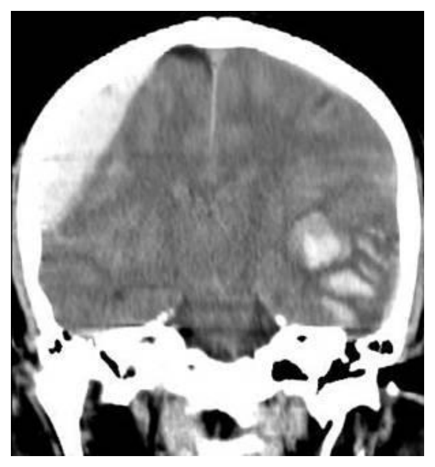
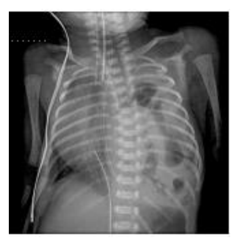
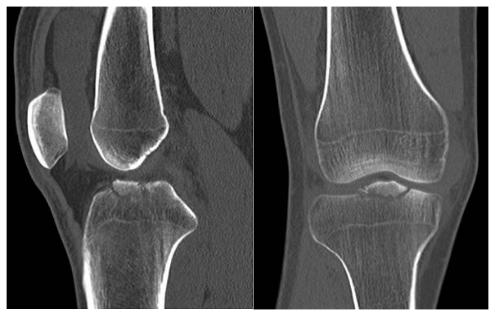
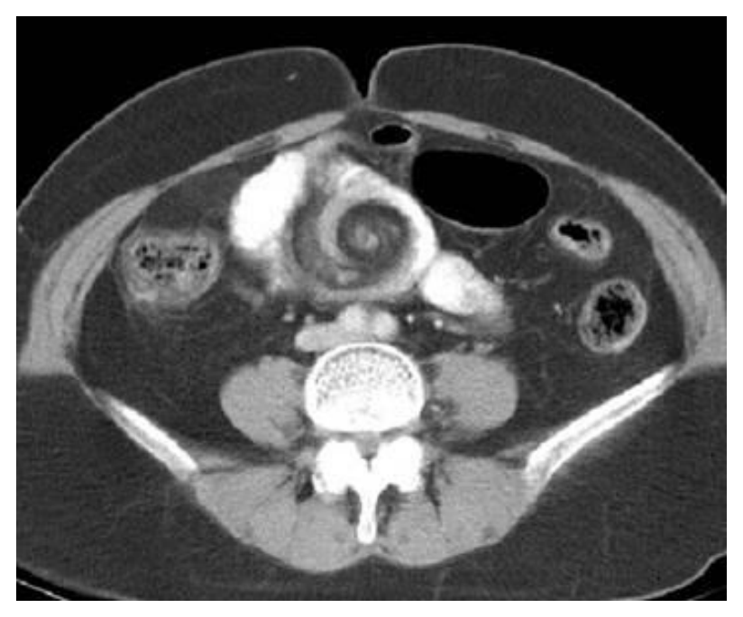

開卷有益 ／
醫師 ／ 醫學（五）（包括外科、骨科、泌尿科等科目及其相關臨床實例與醫學倫理） ／ 114 年第 2 次114 年第 2 次醫師醫學（五）（包括外科、骨科、泌尿科等科目及其相關臨床實例與醫學倫理）試題與答案
這一頁是民國 114 年第 2 次醫師醫學（五）（包括外科、骨科、泌尿科等科目及其相關臨床實例與醫學倫理）的整份歷屆試題，共 80 題，題目與標準答案出自考選部「國家考試試題及測驗式試題答案」開放資料，其中 80 題附有詳解。以下逐題列出題幹、選項與答案；要計時作答或記錄成績，請用線上練習。
考選部原始場次代碼：114070
線上作答這一科 →
全部 80 題
第 1 題
最常使用的能量評估公式 Harris-Benedict Equation，不包含下列那一項變數？
（A） 年齡（B） 身高（C） 體重（D） 體表面積答案：（D）
詳解與考點 正解：Harris-Benedict Equation 所使用的基本變數。此公式以性別、年齡、身高與體重估計基礎能量消耗（basal energy expenditure, BEE），並不直接納入體表面積，故選 D。
A：年齡是公式中的變數；年齡增加會影響估計的基礎能量消耗，故不是本題的除外項。
B：身高是公式中的變數，用以反映體格差異，故不是本題的除外項。
C：體重是公式中的變數，與身高、年齡及性別共同用於估算 BEE，故不是本題的除外項。
本題考點：Harris-Benedict Equation——以性別、年齡、身高與體重估計基礎能量消耗（BEE）；體表面積（body surface area）不是該公式的直接輸入變數。
第 2 題
術前病人的營養狀態（pre-operative nutrition status），常會影響術後合併症的發生及死亡率；對於病患術前營養狀態的評估為不良者，術前需積極營養介入性治療，但下列何者除外？
（A） Body Mass Index（BMI）＜18.5 kg/m2（B） Unintentional weight loss over 6 months period＞10%（C） Serum albumin＜3 g/dL（D） Serum pre-albumin＜40 mg/dL答案：（D）
詳解與考點 正解：找出「不屬於」術前明顯營養不良的指標。BMI<18.5 kg/m2、6 個月非預期體重減少＞10%及 serum albumin<3 g/dL，都提示營養風險；serum pre-albumin<40 mg/dL 的門檻過高，不能據此界定營養不良，故選 D。prealbumin 也會受急性發炎與肝臟蛋白合成影響，必須合併整體臨床評估。
A：BMI<18.5 kg/m2 代表體重過輕，是術前營養風險的常用篩檢線索，屬需要積極評估與介入的情況。
B：6 個月內非預期體重減少＞10% 反映持續性營養耗損，即使表面體重尚未很低，也應視為不良營養狀態的重要警訊。
C：serum albumin<3 g/dL 常見於營養不良或嚴重疾病狀態，與較差術後結果相關；雖非單獨診斷工具，仍是本題所列的高風險指標。
本題考點：術前營養評估（pre-operative nutritional assessment）——低 BMI、非預期體重下降與低白蛋白提示營養風險；營養生化指標（nutritional biomarkers）須與發炎及整體臨床狀態合併解讀。
第 3 題
下列何者不是肝臟移植的適應症？
（A） 乙醯胺酚（acetaminophen）過量引發的肝毒性導致急性肝衰竭（B） 慢性 B 型肝炎引發急性發作及肝衰竭（C） 慢性 C 型肝炎合併肝硬化、嚴重腹水及肝腎症候群（hepatorenal syndrome）（D） 小型肝細胞癌合併門脈分枝腫瘤血栓及末期肝病答案：（D）
詳解與考點 正解：肝細胞癌合併門脈分枝腫瘤血栓。肝臟移植適用於嚴格選定、肝內局限的肝細胞癌；腫瘤侵犯門脈分枝代表血管侵犯與較高復發風險，通常不屬標準移植適應症，故選 D。
A：acetaminophen 過量造成的急性肝衰竭，若符合嚴重肝功能衰竭與預後不佳等情況，可成為緊急肝臟移植的適應症。
B：慢性 B 型肝炎急性惡化若進展為肝衰竭，經評估無法恢復且預後不佳時，可考慮肝臟移植。
C：慢性 C 型肝炎肝硬化合併難治性腹水與肝腎症候群，代表失代償末期肝病；在適當評估後可為肝臟移植適應症。
本題考點：肝臟移植適應症（liver transplantation indications）——急性肝衰竭與失代償肝硬化可考慮移植；肝細胞癌（hepatocellular carcinoma）的血管侵犯通常排除於標準移植選擇之外。
第 4 題
有關毒蛇咬傷的敘述，下列何者錯誤？
（A） 被百步蛇咬傷後的局部特徵為組織腫脹、劇痛及瘀血，嚴重時可造成肢體的腔室症候群及大量組織壞死（B） 當被毒蛇咬傷時切勿將傷口劃開，亦不可將毒液吸出或使用止血帶（C） 毒蛇咬傷之嚴重度評估包含局部組織腫脹及瘀血範圍、疼痛程度、水泡、瘀斑的形成及生命徵象是否異常等（D） 毒蛇血清的給與需及時，通常會依據病人的體重來計算應給與劑量答案：（D）
詳解與考點 正解：毒蛇抗毒血清的劑量判定。抗毒血清是中和循環中毒液的免疫製劑，使用量應依蛇種、局部與全身中毒嚴重度及臨床反應調整，而非依病人體重計算，故錯誤的是 D。
A：百步蛇咬傷可造成明顯局部腫脹、疼痛與瘀血，嚴重時可能出現組織壞死或腔室症候群；此為需密切觀察與處置的正確描述。
B：切開傷口、口吸毒液與使用止血帶都可能增加組織傷害、感染或缺血，不能取代迅速送醫與正確評估，敘述正確。
C：毒蛇咬傷嚴重度須追蹤腫脹及瘀血範圍、疼痛、水泡、瘀斑與生命徵象；動態評估能辨識局部或全身中毒惡化，敘述正確。
本題考點：蛇咬傷處置（snakebite management）——抗毒血清（antivenom）依臨床中毒程度給予，不按體重換算；局部毒性與生命徵象的連續評估決定治療急迫性。
第 5 題
關於免疫抑制劑（immunosuppressant）的敘述，下列何者錯誤？
（A） Azathioprine 會抑制骨髓（B） Cyclosporine 可直接抑制 macrophage 產生 IL-1（C） OKT3 會使 T cell 釋出細胞激素（cytokine）而引起發燒、畏寒、低血壓等症狀（D） Pulse steroid therapy 可能出現高血糖、高血壓、睡眠困擾等症狀答案：（B）
詳解與考點 正解：cyclosporine 的主要作用機轉。Cyclosporine 抑制 calcineurin，降低 T 細胞活化與 IL-2 等細胞激素轉錄；它不是直接抑制 macrophage 產生 IL-1 的藥物，故錯誤的是 B。
A：Azathioprine 是嘌呤代謝抑制相關的免疫抑制劑，可造成骨髓抑制，敘述正確。
C：OKT3 與 T 細胞表面 CD3 相關，初始給藥可誘發細胞激素釋放，出現發燒、畏寒與低血壓等反應，敘述正確。
D：高劑量脈衝類固醇治療可能引起高血糖、高血壓與睡眠困擾等不良反應，敘述正確。
本題考點：鈣調神經磷酸酶抑制劑（calcineurin inhibitors）——cyclosporine 主要抑制 T 細胞活化及 IL-2 轉錄；免疫抑制劑不良反應（immunosuppressant adverse effects）須依藥物機轉辨識。
第 6 題
一位因短腸症（short bowel syndrome）併腹瀉，而長期接受全中心靜脈營養（total parenteralnutrition）的病人，如果發生 perioral pustular rash, darkening of skin creases 及 neuritis，最可能是因缺乏下列何項營養成分？
（A） 蛋白質（B） 脂肪酸（C） 維生素 B（D） 鋅離子答案：（D）
詳解與考點 正解：長期全中心靜脈營養後出現口周膿疱樣皮疹、皮膚皺褶變深與神經炎。這組表現典型指向鋅缺乏；短腸症與腹瀉會增加吸收不良和流失，若 TPN 微量元素補充不足即可發生，故選 D。
A：蛋白質缺乏較常造成肌肉量減少、傷口癒合不良與水腫等廣泛營養不良表現，無法特異解釋此組皮膚與神經症狀。
B：必需脂肪酸缺乏可見乾燥、脫屑性皮膚炎等改變，但口周膿疱樣皮疹合併神經炎更符合鋅缺乏。
C：維生素 B 群缺乏可造成不同型態的口腔、皮膚或神經症狀，容易成為誘答；但題幹同時有皮膚皺褶變深與長期 TPN 的微量元素線索，較支持鋅缺乏。
本題考點：鋅缺乏（zinc deficiency）——可造成皮膚炎樣病灶與神經症狀；全靜脈營養（total parenteral nutrition, TPN）需完整補充微量元素，短腸症候群（short bowel syndrome）會增加缺乏風險。
第 7 題
身體創傷後的代謝反應會明顯改變，不同的創傷會造成不同程度的基礎能量消耗（basal energyexpenditure, BEE），下列三種損傷的 BEE 變化由高而低之排序為何？
（A） 嚴重燒燙傷＞飢餓＞外科手術（B） 外科手術＞嚴重燒燙傷＞飢餓（C） 飢餓＞嚴重燒燙傷＞外科手術（D） 嚴重燒燙傷＞外科手術＞飢餓答案：（D）
詳解與考點 正解：創傷後 BEE 的高低。嚴重燒燙傷引發最強的壓力性高代謝反應；外科手術也會提高能量消耗，但程度通常較燒燙傷低；飢餓則是適應性降低代謝，因此排序為嚴重燒燙傷＞外科手術＞飢餓，故選 D。
A：此排序把飢餓置於手術之前，但飢餓時身體會降低能量消耗以保存能量，並非比手術壓力反應更高。
B：外科手術會造成高代謝，容易看似合理；但嚴重燒燙傷的發炎與分解代謝反應通常更強烈，故其排序顛倒。
C：飢餓會使 BEE 下降，放在最高完全與生理適應相反，故錯。
本題考點：創傷代謝反應（metabolic response to injury）——嚴重燒燙傷造成顯著高代謝；外科手術增加基礎能量消耗（BEE）；飢餓產生代謝適應而降低能量消耗。
第 8 題
Rituximab 是一種單株抗體（monoclonal antibody），可以抑制 B 細胞（B-cell）對移植器官的排斥反應，主要是針對 B 細胞表面何種標誌（cell surface marker）？
（A） CD4（B） CD8（C） CD20（D） CD34答案：（C）
詳解與考點 正解：rituximab 對 B 細胞的標靶。Rituximab 是抗 CD20 單株抗體，結合 B 細胞表面的 CD20 後造成 B 細胞耗竭，因而可減少抗體相關的移植排斥反應，故選 C。
A：CD4 是輔助型 T 細胞常用的表面標誌，並非 rituximab 的 B 細胞標靶。
B：CD8 是細胞毒性 T 細胞常用的表面標誌，與 rituximab 的主要作用標的不同。
D：CD34 常用於辨識造血幹細胞與部分前驅細胞，不是成熟 B 細胞上 rituximab 所針對的標誌。
本題考點：Rituximab——抗 CD20 單株抗體（anti-CD20 monoclonal antibody）造成 B 細胞耗竭；移植排斥（transplant rejection）中的體液性免疫（humoral immunity）與 B 細胞及抗體有關。
第 9 題
一位 18 歲男性因車禍送來急診，剛開始意識清楚可以對答問題，頭皮有一撕裂傷；30 分鐘後，在縫合的過程中，意識狀況變差至 E2V1M4。下列何項處置最適當？
（A） 趕快安排 brain CT，以排除顱內出血的可能（B） 立即執行 bedside FAST，檢查是否有腹內器官破裂出血的可能（C） 抽血檢查以評估是否有電解質的異常，造成意識模糊（D） 重新量測生命徵象，必要時給與氣管內管插管，維持呼吸道通暢答案：（D）
詳解與考點 正解：車禍後意識由清醒快速惡化至 E2V1M4，總格拉斯哥昏迷指數為 2+1+4=7。GCS≤8 代表無法可靠保護呼吸道，創傷初期處置必須先重新評估生命徵象並在必要時插管維持氣道與氧合，故選 D；影像檢查須在 ABC 穩定後進行。
A：意識惡化確實要考慮顱內出血，brain CT 是重要檢查；但 GCS 7 時先保護氣道更具即時性，故此項看似對卻不是最優先處置。
B：腹內出血也是鈍傷病人的鑑別診斷，FAST 可快速評估；然而題目未先確保呼吸道通暢，處置優先順序不對。
C：電解質異常可造成意識改變，但外傷後短時間迅速惡化應先依創傷流程處理氣道、呼吸與循環，不能優先等待抽血結果。
本題考點：創傷初期評估（primary survey）——依 ABC 優先處置；格拉斯哥昏迷指數（Glasgow Coma Scale, GCS）≤8 時應考慮氣管內插管以保護呼吸道。
第 10 題
承上題，brain CT 做完後如附圖所示，下列敘述何者錯誤？

（A） 左腦為 epidural hematoma，右腦為 contused intracranial hematoma（B） 右腦的出血來源多半為顱骨骨折造成中腦膜動脈（middle meningeal artery）破裂而產生（C） 左腦的出血來源多半為大腦本身的血管破裂而產生（D） 若病人的瞳孔出現放大的情形，則建議進行開顱減壓手術答案：（A）
詳解與考點 正解：CT 影像左側可見貼附顱骨內板、呈雙凸透鏡狀的高密度顱外軸性血腫，依頭部 CT 慣例影像左側對應病人右腦，符合右側硬腦膜外血腫（epidural hematoma）；影像右側、即病人左腦則見腦實質內不規則高密度出血灶，符合腦挫傷合併腦內血腫（contused intracranial hematoma）。故（A）把左右兩側病灶對調，敘述錯誤。
B：右側硬腦膜外血腫常與顳骨骨折相關，骨折可撕裂中腦膜動脈（middle meningeal artery），血液累積於硬腦膜與顱骨之間，形成影像中的雙凸透鏡狀血腫；此敘述正確，非本題答案。
C：左側腦挫傷性腦內血腫是外傷造成腦組織及其小血管受損、破裂所致，出血位於腦實質內，影像形態也不同於硬腦膜外血腫；此敘述正確，非本題答案。
D：瞳孔放大可能代表顱內壓升高導致腦疝（brain herniation）壓迫同側動眼神經，是惡化警訊。對合併顱內血腫且出現神經學惡化的病人，緊急開顱清除血腫及減壓是合理處置方向，故此敘述非錯誤。
本題考點：硬腦膜外血腫（epidural hematoma）常呈雙凸透鏡狀，常見於中腦膜動脈損傷；腦挫傷性腦內血腫（contused intracranial hematoma）位於腦實質、形態較不規則；瞳孔擴大須警覺顱內壓升高與腦疝（brain herniation）。
第 11 題
下列關於 central cord syndrome 的敘述，何者錯誤？
（A） 上肢的運動功能缺損大於下肢（B） 常導因於 acute cervical hyperflexion injury（C） 可能伴隨有 sphincter dysfunction，通常造成 urinary retention（D） 通常下肢的肌力會比上肢的肌力早回復答案：（B）
詳解與考點 正解：central cord syndrome 的受傷機轉。此症候群常見於頸椎退化或狹窄者遭受頸部過度伸展（hyperextension）傷害，而非 acute cervical hyperflexion injury，故錯誤的是 B。中央脊髓受損時，上肢無力通常比下肢明顯。
A：上肢運動功能缺損大於下肢是 central cord syndrome 的典型特徵，敘述正確。
C：病人可能有膀胱括約肌功能障礙與尿滯留，為此症候群可伴隨的自主神經表現，敘述正確。
D：恢復常呈現下肢先於上肢的趨勢，因此下肢肌力可比上肢早回復，敘述正確。
本題考點：中央脊髓症候群（central cord syndrome）——典型為頸部過伸傷害後上肢無力較下肢嚴重；脊髓不完全損傷（incomplete spinal cord injury）可合併膀胱功能障礙。
第 12 題
關於脊椎腫瘤，下列敘述何者錯誤？
（A） 硬膜外（extradural）腫瘤以良性居多（B） 硬膜內、髓膜外（intradural extramedullary）的腫瘤，以腦膜瘤（meningioma）及神經鞘瘤（schwannoma）最常見（C） 髓膜內（intramedullary）腫瘤以星形細胞瘤（astrocytoma）及室管膜瘤（ependymoma）最常見（D） 最好發的部位是胸椎答案：（A）
詳解與考點 正解：硬膜外脊椎腫瘤的性質。硬膜外（extradural）病灶常由惡性腫瘤脊椎轉移造成，因此稱其「以良性居多」錯誤，故選 A。
B：硬膜內、髓外（intradural extramedullary）腫瘤常見腦膜瘤與神經鞘瘤，敘述正確。
C：髓內（intramedullary）腫瘤常見室管膜瘤與星形細胞瘤，敘述正確。
D：脊椎腫瘤常見於胸椎，與胸椎長度、血流及轉移分布有關，敘述正確。
本題考點：脊椎腫瘤定位（spinal tumor localization）——硬膜外腫瘤常須考慮轉移性惡性腫瘤；硬膜內髓外常見腦膜瘤、神經鞘瘤；髓內常見室管膜瘤與星形細胞瘤。
第 13 題
下列腦瘤中何者較常見於孩童，較少見於成人？
（A） 多形性神經膠質母細胞瘤（glioblastoma multiforme）（B） 腦膜瘤（meningioma）（C） 腦下垂體腺瘤（pituitary adenoma）（D） 神經管胚細胞瘤（medulloblastoma）答案：（D）
詳解與考點 正解：「孩童較常見、成人較少見」的腦瘤。神經管胚細胞瘤（medulloblastoma）是典型兒童後顱窩惡性腫瘤，成人相對少見，故選 D。
A：多形性神經膠質母細胞瘤多見於成人，尤其年長者，並非以兒童為主。
B：腦膜瘤主要見於成人，且常見於中老年族群，與題目年齡分布不符。
C：腦下垂體腺瘤也較常見於成人；雖可影響不同年齡層，並不是典型兒童優勢腫瘤。
本題考點：神經管胚細胞瘤（medulloblastoma）——為常見兒童腦腫瘤，常位於後顱窩；腦腫瘤流行病學（brain tumor epidemiology）可用年齡分布輔助鑑別。
第 14 題
有關毛毛樣血管疾病（moyamoya disease）的敘述，下列何者錯誤？
（A） 亞洲人較多（B） 多發生在兩側血管（C） 影像上最常見中大腦動脈與後大腦動脈血管狹窄萎縮（D） 小孩通常以缺血性腦病變表現答案：（C）
詳解與考點 正解：moyamoya disease 的血管狹窄部位。其核心病變為雙側顱內頸動脈末端及近端前大腦動脈、中大腦動脈的進行性狹窄或閉塞，並形成基底部側枝循環；把後大腦動脈列為最常見的核心狹窄血管不正確，故選 C。
A：毛毛樣血管疾病在亞洲族群較常見，敘述正確。
B：典型 moyamoya disease 多為雙側病變；單側狹窄可見於早期或 moyamoya syndrome，但不推翻此典型描述。
D：兒童較常以暫時性腦缺血發作或缺血性腦中風表現，敘述正確。
本題考點：毛毛樣血管疾病（moyamoya disease）——顱內頸動脈末端及近端 ACA、MCA 的進行性狹窄造成側枝血管網；兒童常以缺血性腦病變（ischemic cerebrovascular events）表現。
第 15 題
當周邊神經（peripheral nerve）只有髓鞘（myelin sheath）受傷時的 neurapraxia，需多久才能恢復功能？
（A） 一星期（B） 一個月（C） 六星期（D） 三個月本題送分，無標準答案
詳解與考點 本題官方公告送分。
第 16 題
下列何者不是斷指顯微重接（digital replantation）的絶對適應症（strong indications）？
（A） 多根手指截斷時（multiple digital amputations）（B） 拇指截斷時（thumb amputation）（C） 小孩子任一手指截斷時（any amputated part in children）（D） 成人單一手指在屈指淺肌近端處截斷時（amputation at proximal flexor digitorum superficialis of asingle finger in adults）答案：（D）
詳解與考點 正解：成人單一手指在屈指淺肌近端截斷。此情況重接後常受腱、神經與關節功能限制，不能列為顯微重接的強適應症；是否重接需再依手指、工作需求、傷口污染與缺血時間等個別評估，故選 D。
A：多根手指截斷會嚴重影響抓握功能，屬強烈考慮顯微重接的情況。
B：拇指對捏、抓握及整體手功能極重要，拇指截斷通常是顯微重接的強適應症。
C：兒童再生與功能適應潛力較佳，任何手指截斷通常應積極評估重接，屬強適應症。
本題考點：斷指顯微重接（digital replantation）——拇指、多指與兒童截肢是強適應症；近端成人單指截斷（proximal single-digit amputation）因預期功能較差，通常不是強適應症。
第 17 題
Z 形整形術（Z-plasty）的目的之一是可以延伸主軸的長度。在兩側臂線與主軸成 60 度時，則可以增加主軸長度的多少？
（A） 60%（B） 75%（C） 90%（D） 100%答案：（B）
詳解與考點 正解：設 Z 形整形術兩側等臂長為 L。兩側臂與主軸成 60 度時，新主軸長為 2L×sin60°=1.732L；相對原主軸 L，增加 1.732L-L=0.732L，即約 73.2%。臨床慣例取約 75%，故選 B。
A：60% 低估了 60 度 Z-plasty 的經典延長量；角度愈小，延長量才會相對下降。
C：90% 高於 60 度設計通常可達的延長量，不能把較大角度的理論延長效果套用到 60 度。
D：100% 代表主軸加倍，並非 60 度 Z-plasty 的標準幾何結果。
本題考點：Z 形整形術（Z-plasty）——藉皮瓣轉位延長瘢痕攣縮的主軸；60 度 Z-plasty 的主軸延長（central limb lengthening）約為 75%。
第 18 題
皮膚張力鬆弛線（relaxed skin tension lines, RSTLs）和皮膚切口相關，下列敘述何者正確？
（A） 與皮下肌肉走向成 45 度（B） 有表情時與面部形成的皺紋線成垂直線（C） 與皮下肌肉走向垂直（D） 和唇緣線垂直本題送分，無標準答案
詳解與考點 本題官方公告送分。
第 19 題
一位 28 歲 70 公斤的男性被送到急診時，初步評估全身有 70%深二度燒傷，需評估前 8 小時內體液的補充。根據 Parkland formula 下列何者為最佳選擇？
（A） 9,800 mL lactated Ringer（LR）輸液（B） 9,800 mL normal saline（NS）輸液（C） 4,900 mL 5% Dextrose 輸液（D） 4,900 mL lactated Ringer（LR）輸液答案：（A）
詳解與考點 正解：70 公斤、70% 深二度燒傷，以及「前 8 小時」的 Parkland formula。24 小時所需乳酸林格氏液為 4 mL × 70 kg × 70%＝19,600 mL；其中一半應自受傷時間起的前 8 小時給予，故為 19,600 ÷ 2=9,800 mL LR，選 A。
B：9,800 mL 的體積雖正確，但 Parkland formula 的復甦液體為 lactated Ringer，而非 normal saline；大量 NS 容易造成高氯性代謝性酸中毒，故不宜作為本題的最佳選擇。
C：4,900 mL 既不是前 8 小時所需的 9,800 mL，5% Dextrose 也不能提供燒傷初期所需的等張血管內容量復甦，故錯。
D：LR 的液體種類正確，但 4,900 mL 僅為本題前 8 小時需求量的一半，補液量不足。
本題考點：Parkland formula——燒傷最初 24 小時液體量為 4 mL × 體重 kg × 燒傷面積%；前 8 小時給一半，復甦液首選乳酸林格氏液（lactated Ringer solution）；燒傷液體復甦（burn fluid resuscitation）須由受傷起算時間。
第 20 題
以剝離侵犯範圍而言，主動脈剝離（aortic dissection）DeBakey type IIIa 與 type IIIb 間最大區別在於那一部分的主動脈？
（A） 升主動脈（ascending aorta）（B） 主動脈弓（aortic arch）（C） 降主動脈（descending aorta）（D） 腹主動脈（abdominal aorta）答案：（D）
詳解與考點 正解：DeBakey type IIIa 與 IIIb 的剝離延伸範圍。兩者都起於降主動脈；IIIa 侷限於胸主動脈，IIIb 則向下延伸越過橫膈至腹主動脈，因此最大區別在腹主動脈，選 D。
A：升主動脈受累是 DeBakey type I 或 II 的分類重點，不是 IIIa 與 IIIb 的差異。
B：主動脈弓不是區分 IIIa、IIIb 的關鍵；這兩型皆屬起始於降主動脈的剝離。
C：兩型皆有降主動脈受累。此選項看似合理，是因為 type III 的起點就在降主動脈；真正的分界是是否延伸至腹主動脈。
本題考點：DeBakey 分類（DeBakey classification）——type III 起於降主動脈；type IIIa 限於胸主動脈，type IIIb 延伸至腹主動脈；主動脈剝離延伸範圍（extent of aortic dissection）用於解剖判讀。
第 21 題
40 歲男性病患無任何舊疾及創傷，因左下肢突然出現冰冷、無脈、疼痛且感覺異常至急診室就診。3 個月前心臟超音波報告發現二尖瓣嚴重狹窄且左心房擴大，心律為心房顫動（atrial fibrillation），則下列敘述何者錯誤？
（A） 下肢動脈血管急性血栓阻塞（embolism）最為可能（B） 緊急下肢動脈血管打通後，體內鉀離子濃度將可能上升（C） 若有骨骼肌溶解現象（rhabdomyolysis），將因下肢動脈血管打通後，肌蛋白尿（myoglobinuria）狀況會立即緩解（D） 若缺血時間越久，則下肢動脈血管打通後下肢腫脹得越厲害答案：（C）
詳解與考點 正解：二尖瓣嚴重狹窄、左心房擴大與心房顫動，極易形成左心房血栓並栓塞至下肢；題目問錯誤敘述。缺血肢體再灌流後，已受損肌肉釋出的 myoglobin 不會立刻消失，肌蛋白尿也不會立即緩解，故 C 錯誤。
A：心房顫動合併左心房擴大是心因性栓塞的典型背景，突然發生冰冷、無脈、疼痛與感覺異常符合急性肢體缺血，敘述正確，故非答案。
B：缺血組織內累積的鉀離子在血流恢復後可進入循環，造成高血鉀風險，敘述正確。
D：缺血越久，微血管通透性與肌肉損傷越嚴重；再灌流後液體外滲可使肢體腫脹加劇，敘述正確。
本題考點：急性肢體缺血（acute limb ischemia）——心房顫動可造成心因性栓塞；缺血再灌流傷害（ischemia-reperfusion injury）可致高血鉀、肌肉損傷與腔室症候群；橫紋肌溶解（rhabdomyolysis）的 myoglobin 釋出不會因復流立即終止。
第 22 題
40 天大男嬰出生後診斷為法洛氏四重症（tetralogy of Fallot），因經皮血氧濃度（oxygen saturation）降至 65%，經緊急插管後，下列後續處置何者較不合適？
（A） 給與乙型阻斷劑（beta blocker）（B） 給與輸液（hydration）（C） 給與血管擴張劑（vasodilator）（D） 麻醉鎮定（sedation）答案：（C）
詳解與考點 正解：法洛氏四重症嬰兒嚴重發紺，代表高缺氧性發作（hypercyanotic spell）需降低右心室流出道阻塞並提高全身血管阻力。血管擴張會降低全身血管阻力、增加右向左分流，反而可能加重低血氧，故 C 較不合適。
A：乙型阻斷劑可減少右心室流出道漏斗部痙攣與心跳過速，有助改善高缺氧性發作，敘述適當。
B：輸液可增加靜脈回流與右心室前負荷，改善相對低血容量促發的右向左分流，敘述適當。
D：麻醉鎮定可降低哭鬧、交感刺激與耗氧量，並減少動態性流出道阻塞，屬合理的急救輔助處置。
本題考點：法洛氏四重症（tetralogy of Fallot）——高缺氧性發作因右向左分流增加而發紺；全身血管阻力（systemic vascular resistance）上升有利減少分流；乙型阻斷、補液與鎮定可用於急性處置。
第 23 題
有關胸主動脈瘤之敘述，下列何者錯誤？
（A） 以現有之觀念，先天性雙主動脈瓣（congenital bicuspid aortic valve）可以視為高危險群，有演變為升主動脈瘤之可能（B） 若女性患者的主動脈瘤最大直徑為 7 公分，即可建議手術（C） 升主動脈瘤最大直徑為 6 公分，且無主動脈逆流，不一定非進行主動脈根部置換術（aortic rootreplacement）不可，可以考慮行瓣膜保留術式（valve-sparing procedure）（D） 血管內支架術式（endovascular stenting）已成為治療升主動脈瘤之主流，一般以 DeBakey 分類來評估是否適合放置支架及有無影響腦部血流的風險答案：（D）
詳解與考點 正解：「升主動脈瘤」的治療。血管內支架治療的成熟主力場域是適當解剖條件下的降胸主動脈，而非一般升主動脈瘤；DeBakey 分類主要用於主動脈剝離，亦非評估升主動脈瘤支架適應症的通用分類，故 D 錯誤。
A：先天性雙主動脈瓣與主動脈根部、升主動脈擴張相關，須視為升主動脈瘤的高風險族群，敘述正確。
B：主動脈瘤直徑達 7 公分已明顯增加破裂與剝離風險，建議手術評估合理，敘述正確。
C：升主動脈瘤的手術範圍取決於根部與瓣膜是否病變；沒有主動脈逆流且根部可保留時，可考慮瓣膜保留術式，不必一律做主動脈根部置換，敘述正確。
本題考點：胸主動脈瘤（thoracic aortic aneurysm）——雙主動脈瓣（bicuspid aortic valve）與升主動脈病變相關；瓣膜保留根部手術（valve-sparing root procedure）須依根部及瓣膜狀態決定；DeBakey 分類（DeBakey classification）主要描述主動脈剝離。
第 24 題
有關腹主動脈瘤（abdominal aortic aneurysm）之敘述，下列何者正確？
（A） 若無破裂現象，腹主動脈瘤之最大直徑大於 4 公分 ，即可建議手術（B） 血管支架治療比起傳統開腹主動脈置換手術，再次介入（re-intervention）比率低（C） 以住院的手術存活率而言，傳統開腹主動脈置換手術比血管支架治療為低（D） 手術時，下腸繫膜動脈（inferior mesenteric artery）一定要重新再吻合，以減少腸缺血（ischemicbowel）之合併症答案：（C）
詳解與考點 正解：比較腹主動脈瘤開腹修補與血管內修補的住院期結果。相較於血管內主動脈瘤修補術，傳統開腹置換手術的圍手術期侵襲較大，住院手術存活率較低，故 C 正確。
A：未破裂腹主動脈瘤是否手術要綜合直徑、成長速度、症狀與病人風險評估，不能只以大於 4 公分一律建議手術，敘述過度簡化。
B：血管內修補雖有較佳的早期手術結果，但術後需影像追蹤，內漏或裝置相關問題可增加再次介入機會；說其再次介入率較低不正確。
D：下腸繫膜動脈是否重建取決於側枝循環與腸道缺血風險，並非每例都必須重新吻合。
本題考點：腹主動脈瘤修補（abdominal aortic aneurysm repair）——血管內修補（EVAR）通常有較低的早期手術風險；開腹修補（open repair）與 EVAR 的長期追蹤及再次介入型態不同；腸道灌流（colonic perfusion）須依個別側枝循環判斷。
第 25 題
下列症狀何者與胸腔疾病最不相關？
（A） superior vena cava syndrome（B） Horner syndrome（C） pseudopolycythemia（D） Pancoast syndrome答案：（C）
詳解與考點 正解：找與胸腔疾病最不相關的症候。pseudopolycythemia 是血漿容量減少造成的相對性紅血球濃縮，常與脫水等血容量狀態相關，並非胸腔病灶的典型局部表現，故選 C。
A：上腔靜脈症候群（superior vena cava syndrome）可由縱隔或肺部腫瘤壓迫、侵犯上腔靜脈引起，與胸腔疾病密切相關。
B：Horner syndrome 可由肺尖部腫瘤侵犯交感神經路徑引起，是胸腔肺尖病灶的重要線索。
D：Pancoast syndrome 本身即與肺尖部腫瘤侵犯臂神經叢及交感神經鏈相關，屬典型胸腔疾病表現。
本題考點：胸腔腫瘤局部侵犯（thoracic tumor local invasion）——肺尖腫瘤可致 Pancoast syndrome 與 Horner syndrome；縱隔腫瘤可致上腔靜脈症候群；相對性紅血球增多症（relative polycythemia）不屬典型胸腔局部症候。
第 26 題
小孩子最常發現的縱隔腔腫瘤是：
（A） 胸腺囊腫（thymic cyst）（B） 淋巴瘤（lymphoma）（C） 神經源腫瘤（neurogenic tumor）（D） 生殖細胞腫瘤（germ cell tumor）答案：（C）
詳解與考點 正解：依傳統外科分類，兒童原發性縱隔實體腫瘤以後縱隔的神經源性腫瘤最常見，故選 C。若將淋巴瘤一併納入所有縱隔腫塊，淋巴瘤也是重要且常見的診斷；本題的「最常見」須限於前述分類範圍。
A：胸腺囊腫可發生於前縱隔，但不是傳統分類下兒童最常見的原發性縱隔實體腫瘤。
B：淋巴瘤是兒童前縱隔腫塊的重要鑑別診斷；它看似合理，是因為整體縱隔腫塊的病例系列可常見淋巴瘤，但非本題所採的分類範圍。
D：生殖細胞腫瘤亦多位於前縱隔，但盛行率不及神經源性腫瘤。
本題考點：兒童縱隔腫瘤（pediatric mediastinal tumor）——神經源性腫瘤（neurogenic tumor）常位於後縱隔；淋巴瘤（lymphoma）是前縱隔及整體縱隔腫塊的重要鑑別；比較盛行率時須先界定病灶分類。
第 27 題
關於呼吸道的疾病，下列敘述何者最不適當？
（A） 氣管的腺樣囊狀癌（adenoid cystic carcinoma）可能沿著神經上下擴散（B） 需長期使用呼吸器者，不適合做氣管修補手術（C） 曲黴菌球（aspergilloma fungus ball）使用抗黴菌藥物治療 3 個月為首選（D） 局部的支氣管擴張症適合手術切除答案：（C）
詳解與考點 正解：「最不適當」的呼吸道疾病處置。曲黴菌球是既存肺腔內的菌球，抗黴菌藥物對無血管腔內病灶的清除效果有限；有症狀、尤其咳血者通常以手術切除或其他止血策略評估，不能把抗黴菌藥物治療 3 個月稱為首選，故 C 最不適當。
A：氣管腺樣囊狀癌具有沿神經周圍浸潤與黏膜下延伸的特性，敘述正確。
B：長期呼吸器依賴通常意味呼吸功能或病況不穩，氣管修補後需保護吻合處，持續正壓通氣不利癒合，敘述適當。
D：局部支氣管擴張症若反覆感染、咳血或症狀難以控制，可評估手術切除，敘述適當。
本題考點：曲黴菌球（aspergilloma）——病灶位於既存肺腔，治療須依症狀與出血風險評估；氣管腺樣囊狀癌（adenoid cystic carcinoma）可沿神經周圍擴散；局部支氣管擴張症（localized bronchiectasis）可考慮切除治療。
第 28 題
關於食道功能性疾病的處置，下列敘述何者錯誤？
（A） 常需要高解析度測壓機（high resolution manometry）及 pH 檢測，來區分疾病的種類及範圍（B） 胡桃夾子食道（nutcracker esophagus）為最常見的食道過度收縮疾病，應避免喝咖啡、過冷、過熱食物（C） 廣泛性食道痙攣（diffuse esophageal spasm）主要為藥物及內視鏡治療（D） 賁門弛緩不能（achalasia）治療上，氣球擴張和肉毒桿菌注射效果一樣好答案：（D）
詳解與考點 正解：賁門弛緩不能的療效比較。氣球擴張與肉毒桿菌注射都可改善症狀，但肉毒桿菌注射的效果通常較短暫、復發較常見，不能說兩者效果一樣好，故 D 錯誤。
A：高解析度食道測壓是判斷食道運動障礙的核心檢查；pH 檢測可協助評估逆流相關症狀，敘述適當。
B：胡桃夾子食道屬過度收縮性食道運動障礙，避免誘發症狀的飲食刺激可作為生活調整，敘述適當。
C：廣泛性食道痙攣通常先採藥物與內視鏡等較低侵襲處置，難治病例才進一步評估其他治療，敘述正確。
本題考點：賁門弛緩不能（achalasia）——治療可包括氣球擴張（pneumatic dilation）、肉毒桿菌注射（botulinum toxin injection）與肌切開術；高解析度測壓（high-resolution manometry）用於食道運動障礙診斷；肉毒桿菌療效較不持久是常見鑑別點。
第 29 題
下列對於誤吞腐蝕性液體病人之處置，何者較不適當？
（A） 給與廣效型抗生素（B） 可嘗試以胃鏡評估（C） 立即放置鼻胃管，並以生理食鹽水沖洗（D） 注意喉部及呼吸道是否暢通答案：（C）
詳解與考點 正解：誤吞腐蝕性液體的初期處置。此時首重呼吸道安全與評估消化道損傷；立即盲目放置鼻胃管並灌洗，可能再度摩擦受損黏膜、誘發嘔吐或穿孔，故 C 較不適當。
A：廣效型抗生素並非所有患者例行必需，但在嚴重腐蝕傷、疑似感染或特定臨床情境可納入處置考量；相較於立即鼻胃管灌洗，並非本題最不適當的作法。
B：病況穩定且無穿孔疑慮時，可於適當時機以胃鏡評估傷害程度；其目的在分級與決定後續治療，敘述可行。
D：腐蝕物可造成口咽、喉頭水腫與上呼吸道阻塞，先注意呼吸道是否通暢是必要處置。
本題考點：腐蝕性物質攝入（caustic ingestion）——初期優先處理呼吸道（airway management）；上消化道內視鏡（upper endoscopy）用於傷害分級；避免誘吐與盲目鼻胃管灌洗，以免加重傷害。
第 30 題
下列關於 paraesophageal hernia 之敘述，何者最不適當？
（A） 經診斷後，應一律手術，以防發生 complication（B） 由於 hiatus 之續漸寬大引起（C） 胃是最常 herniate 的器官（D） 阻塞性之症狀為最常見答案：（A）
詳解與考點 正解：paraesophageal hernia 的手術適應症。此病可有胃扭轉、出血或阻塞等併發症，但診斷後是否手術仍須依症狀、併發症、手術風險及個別情況判斷，不能一律手術，故 A 最不適當。
B：食道裂孔隨年齡或組織鬆弛而逐漸擴大，可促成食道旁疝氣形成，敘述適當。
C：胃是最常經食道裂孔疝入胸腔的腹腔器官，敘述正確。
D：食道旁疝氣可因胃部移位、扭轉或阻塞而表現吞嚥困難、餐後不適等阻塞性症狀，敘述可成立。
本題考點：食道旁疝氣（paraesophageal hernia）——病理基礎為食道裂孔（esophageal hiatus）擴大；可併發胃扭轉（gastric volvulus）或阻塞；手術決策應依症狀與風險個別化。
第 31 題
有關鼠蹊部疝氣（inguinal hernia），下列敘述何者錯誤？
（A） 鼠蹊部疝氣可分為直接型或間接型疝氣（B） 馬庫型疝氣（pantaloon-type hernia）是指兩種都有（C） 間接型疝氣指的是因腹壓增加，而間接形成的疝氣（D） 直接型疝氣的疝氣囊（sac）直接由 Hesselbach's triangle 鼓出答案：（C）
詳解與考點 正解：間接型與直接型鼠蹊疝氣的解剖學區別。間接型疝氣是經深鼠蹊環進入鼠蹊管、位於下腹壁動脈外側，常與鞘狀突未閉合相關；並非「因腹壓增加而間接形成」，故 C 錯誤。
A：鼠蹊疝氣可依與下腹壁動脈的關係區分為直接型及間接型，敘述正確。
B：馬庫型疝氣同時具有直接型與間接型兩個疝囊，分居下腹壁動脈兩側，敘述正確。
D：直接型疝氣由 Hesselbach 三角區的後壁薄弱處鼓出，敘述正確。
本題考點：鼠蹊疝氣（inguinal hernia）——間接型疝氣（indirect inguinal hernia）經深鼠蹊環、位於下腹壁動脈外側；直接型疝氣（direct inguinal hernia）經 Hesselbach triangle 鼓出；馬庫型疝氣（pantaloon hernia）兼具兩型。
第 32 題
常見的食道靜脈曲張出血，下列處置何者錯誤？
（A） 治療首要是維持生命徵兆（vital signs）（B） 可以給與 octreotide 或 vasopressin 控制出血（C） 對於大量出血病患，可以考慮以外科分流手術或肝內門靜脈分流術（TIPS）止血（D） 對於連續出血不止的病患，可以使用血管攝影栓塞術進行止血答案：（D）
詳解與考點 正解：食道靜脈曲張的持續出血處置。出血來源在門脈高壓下的食道靜脈曲張，標準升階處置著重血管活性藥物、內視鏡止血及必要時 TIPS；血管攝影栓塞並不是連續出血不止時的典型止血方式，故 D 錯誤。
A：急性出血首先須評估與維持生命徵象、建立血管通路及復甦，敘述正確。
B：octreotide 或 vasopressin 類血管活性治療可降低門脈壓力並協助控制出血，敘述正確。
C：大量或難以控制的出血可評估 TIPS；在特定救援情境也可能考慮外科分流，敘述正確。
本題考點：食道靜脈曲張出血（esophageal variceal bleeding）——門脈高壓（portal hypertension）為病理基礎；血管活性藥物（vasoactive therapy）與內視鏡止血是急性治療核心；經頸靜脈肝內門體分流術（TIPS）用於難治性出血。
第 33 題
對於十二指腸潰瘍的治療，下列何者錯誤？
（A） 藥物控制為治療的第一線考慮（B） 對於疼痛無法控制的潰瘍，可以考慮次全胃切除手術（C） 對於急性潰瘍穿孔的手術方針是越簡單越好，術後輔以氫離子阻斷劑使用為佳（D） 與胃潰瘍不同，十二指腸潰瘍沒有惡性腫瘤的機會答案：（D）
詳解與考點 正解：「十二指腸潰瘍沒有惡性腫瘤的機會」這個絕對敘述。十二指腸潰瘍本身極少為惡性，與須警覺惡性的胃潰瘍不同；但不能據此說完全沒有惡性腫瘤的可能，故 D 錯誤。
A：多數十二指腸潰瘍以抑酸與幽門螺旋桿菌根除等藥物治療為第一線，敘述正確。
B：若潰瘍疼痛或併發症無法以藥物及其他治療控制，可評估手術，次全胃切除是可能術式之一，敘述正確。
C：急性穿孔病人的手術原則是依病況採取安全有效的簡單修補，術後再以抑酸治療與病因控制，敘述正確。
本題考點：十二指腸潰瘍（duodenal ulcer）——藥物治療（medical therapy）為第一線；穿孔性消化性潰瘍（perforated peptic ulcer）常需緊急手術；十二指腸潰瘍的惡性可能性遠低於胃潰瘍，但「完全沒有」是過度絕對。
第 34 題
Zollinger–Ellison syndrome 是由下列何種腫瘤所導致的？
（A） Insulinoma（B） Gastrinoma（C） Glucagonoma（D） Vasoactive intestinal peptide-secreting tumor答案：（B）
詳解與考點 正解：Zollinger–Ellison syndrome 的病理生理。此症候群由分泌 gastrin 的腫瘤造成胃酸過度分泌與反覆、難治性潰瘍，因此致病腫瘤為 gastrinoma，選 B。
A：insulinoma 分泌 insulin，典型表現為低血糖，並不造成胃酸大量分泌。
C：glucagonoma 分泌 glucagon，常見代謝異常與特徵性皮膚表現，非 Zollinger–Ellison syndrome 的病因。
D：分泌 vasoactive intestinal peptide 的腫瘤可造成大量水樣腹瀉與低血鉀等表現，並非高胃酸潰瘍症候群。
本題考點：Zollinger–Ellison syndrome——胃泌素瘤（gastrinoma）分泌胃泌素（gastrin）而造成胃酸過多；胰臟神經內分泌腫瘤（pancreatic neuroendocrine tumor）應依分泌激素與臨床症候辨識。
第 35 題
肝臟血管瘤需要開刀的原因不包含下列何者？
（A） 發生 Kasabach-Merritt syndrome（B） 腫瘤破裂（C） 腫瘤明顯變大（D） 腫瘤大於 5 公分答案：（D）
詳解與考點 正解：肝臟血管瘤的手術理由「不包含」者。肝血管瘤多可觀察追蹤，單以大於 5 公分並不是絕對開刀適應症；是否處置須看症狀、診斷不確定性、快速增大或併發症，故 D 不包含在必須開刀的理由中。
A：Kasabach-Merritt syndrome 代表腫瘤相關消耗性凝血異常，屬嚴重併發症，可構成積極治療或手術評估理由。
B：腫瘤破裂雖少見，但可能造成危及生命的出血，是緊急處置與手術評估理由。
C：腫瘤明顯變大須重新評估診斷、症狀與破裂風險，可能成為介入或手術的理由；其關鍵是成長趨勢，而不是單一尺寸門檻。
本題考點：肝血管瘤（hepatic hemangioma）——多數採觀察追蹤（observation）；Kasabach-Merritt syndrome 與腫瘤破裂是重要併發症；手術適應症（surgical indication）重在症狀、併發症與診斷疑慮，而非單一大小。
第 36 題
大腸癌併發肝臟轉移的病人，下列何項不是影響其手術切除肝臟腫瘤後存活的主要因素？
（A） CEA 血中濃度大於 200ng/mL（B） 肝轉移腫瘤的大小大於 5 公分（C） 原發腫瘤的位置在直腸（rectum）（D） 與原發的大腸癌同時發現的肝臟轉移腫瘤（synchronous liver metastasis）答案：（C）
詳解與考點 正解：大腸癌肝轉移切除後的主要存活預後因子。CEA 明顯升高、肝轉移灶大，以及與原發腫瘤同時發現的肝轉移，都反映較不利的腫瘤負荷或生物學；原發腫瘤在直腸本身不是主要的標準預後因子，故選 C。
A：術前 CEA 顯著升高常反映較高腫瘤負荷或較具侵襲性的生物學行為，是肝轉移切除預後評估的重要因素。
B：肝轉移腫瘤較大通常與較差的切除後預後相關，敘述正確。
D：同步肝轉移表示在診斷原發腫瘤時已出現肝轉移，常被納入切除後預後評估，敘述正確。
本題考點：大腸癌肝轉移（colorectal liver metastasis）——肝切除（hepatectomy）後預後與腫瘤負荷（tumor burden）、CEA（carcinoembryonic antigen）及同步轉移（synchronous metastasis）相關；原發腫瘤的解剖位置本身不是核心預後因子。
第 37 題
有關肝膽胰外科解剖學，下列何者正確？①左肝（left liver）和右肝（right liver）的功能性分界為中肝靜脈（middle hepatic vein） ②肝左葉（left lobe）和右葉（right lobe）的分界為康德黎線（Cantlie’s line） ③Calot 三角的邊包括膽囊管（cystic duct）、肝腹側表面（ventral surface of liver）、總膽管（common bile duct） ④肝十二指腸韌帶（hepatoduodenal ligament）包括門靜脈（portal vein）、固有肝動脈（proper hepaticartery）、總膽管（common bile duct） ⑤左側肝（left lateral segment）及左中肝（left medialsegment）的分界為鐮韌帶（falciform ligament）
（A） ②③④⑤（B） ①③④⑤（C） ①②③④（D） ①②④⑤答案：（D）
詳解與考點 正解：功能性肝臟分段與肝門區構造。中肝靜脈所在的 Cantlie’s line 為左右功能性肝的分界；本題②將 left lobe 與 right lobe 作為功能性左右肝的教材慣用語，故判為正確。若嚴格指表面解剖葉，其分界應為鐮韌帶。肝十二指腸韌帶含門靜脈、固有肝動脈與總膽管；左外側段與左內側段以鐮韌帶附近的裂隙區分，因此①②④⑤正確，選 D。
A：此組合包含③而漏掉①。Calot 三角的邊界並非肝腹側表面；其上界是肝臟下表面，故③錯誤，且①應列入。
B：此組合雖含①④⑤，但仍包含錯誤的③，故不正確。
C：此組合亦包含③且漏掉⑤，故不正確。③看似接近正確，是因為 Calot 三角確實與膽囊管、總膽管及肝臟下表面有關；錯在把肝腹側表面當成邊界。
本題考點：功能性肝分段（functional liver segmentation）——Cantlie’s line 與中肝靜脈（middle hepatic vein）標示左右功能性肝分界；表面解剖左右葉以鐮韌帶（falciform ligament）分界；肝十二指腸韌帶（hepatoduodenal ligament）內含門靜脈、固有肝動脈與總膽管。
第 38 題
下列有關急性膽管炎的敘述，何者正確？①Charcot triad 是指黃疸、右上腹痛、發燒 ②患者在 Charcottriad 的階段，緊急手術並非是必要的 ③Reynolds pentad 是指 Charcot triad 再加上休克及代謝性酸中毒④當患者有 Reynolds pentad 時，若不予以緊急引流處置，會有致命的危險 ⑤膽汁細菌培養最常見的細菌是 Klebsiella, E.Coli, Enterobacter, Pseudomonas 及 Citrobacter spp.
（A） ①②③④（B） ②③④⑤（C） ①②④⑤（D） 僅③④⑤答案：（C）
詳解與考點 正解：急性膽管炎的嚴重度判讀與引流時機。①Charcot triad 為發燒、黃疸與右上腹痛，正確；②僅有此三徵時未必都要立刻手術，應依感染控制與膽道阻塞情形處置，正確；④Reynolds pentad 代表重症膽管炎，若未緊急膽道引流可致命，正確。⑤反映題目採用的膽汁培養菌譜：E. coli、Klebsiella 與 Enterobacter 為常見腸道革蘭陰性桿菌；Pseudomonas 與 Citrobacter 較常見於醫療照護相關感染或既往膽道介入等情境，亦可見於膽汁培養。③將 Reynolds pentad 說成合併代謝性酸中毒錯誤；其經典追加表現是低血壓／休克與意識改變。因此正確組合為①②④⑤，故選 C。
A：此組合納入（A）③。Reynolds pentad 的關鍵是休克與意識狀態改變，不是代謝性酸中毒；酸中毒可見於嚴重敗血症，卻不是其定義成分，故此組合錯。
B：此組合含（B）③而漏掉（B）①。Charcot triad 是急性膽管炎的經典臨床表現，不能排除；且③本身定義錯誤，故不成立。
D：此組合只保留（D）③④⑤，漏掉正確的①、②，並把錯誤的③列入，故非正解。
本題考點：急性膽管炎（acute cholangitis）的 Charcot triad 為發燒、黃疸、右上腹痛；Reynolds pentad（Reynolds pentad）在三徵外加低血壓與意識改變，提示重症感染與緊急膽道引流需求；膽道感染多為腸道菌上行感染。
第 39 題
下列關於 follicular thyroid carcinoma 的敘述，何者錯誤？
（A） 發生率有下降的趨勢，可能與食鹽加碘，及病理組織分類的進步有關（B） 手術前無法經由 fine needle aspiration cytology 診斷是 follicular adenoma 或是 follicularcarcinoma（C） 頸部淋巴結轉移發生率較低（D） 經常為 multi-focal，故手術須將甲狀腺切除乾淨答案：（D）
詳解與考點 正解：濾泡性甲狀腺癌（follicular thyroid carcinoma）的轉移與診斷特性。它較常經血行轉移至肺、骨，頸部淋巴結轉移相對少見，也不像乳突癌常多灶性。因此「經常為 multi-focal，故須將甲狀腺切除乾淨」不是其典型特徵，為錯誤敘述，故選 D。
A：食鹽加碘與病理分類改進可影響流行病學及診斷分類；此敘述與濾泡性癌發生率相對下降的觀察相符，故不是錯誤選項。
B：細針抽吸細胞學（fine needle aspiration cytology）可辨認濾泡性腫瘤，但無法在細胞層次判定包膜或血管侵犯；而這正是區分濾泡性腺瘤與癌的依據，故敘述正確。
C：濾泡性癌主要經血行轉移，頸部淋巴結轉移率較乳突癌低，敘述正確。它看似不如乳突癌常見而容易被誤解為不會轉移，但其風險轉向遠端血行轉移。
本題考點：濾泡性甲狀腺癌（follicular thyroid carcinoma）須以包膜或血管侵犯確診；細針抽吸（fine needle aspiration cytology）不能區分濾泡性腺瘤與癌；其偏向血行轉移，與常多灶、常淋巴轉移的乳突癌（papillary thyroid carcinoma）不同。
第 40 題
下列關於 primary hyperparathyroidism 的敘述，何者正確？
（A） 80%的病人合併有 MEN 1 或 MEN 2B（B） 病人的副甲狀腺數量通常多於四顆以上（C） 若病因為 solitary parathyroid tumor，parathyoid adenoma 與 parathyroid carcinoma 的比例約為 1：3（D） 對於 parathyroid adenoma 的定位檢查，sestamibi scan 的敏感度（sensitivity）大於 80%答案：（D）
詳解與考點 正解：原發性副甲狀腺機能亢進（primary hyperparathyroidism）最常見病因為單一副甲狀腺腺瘤，術前常以 sestamibi scan 協助定位。此檢查對單一腺瘤有實用的定位敏感度，題述大於 80% 為合理概念，故選 D。
A：多數原發性副甲狀腺機能亢進為散發性疾病，只有少數與多發性內分泌腫瘤症候群（multiple endocrine neoplasia, MEN）相關；不能說 80% 病人合併 MEN 1 或 MEN 2B。
B：人通常有四顆副甲狀腺，雖可有副副甲狀腺等解剖變異，但不是原發性副甲狀腺機能亢進患者「通常多於四顆」，故錯。
C：單一腫瘤病因絕大多數是副甲狀腺腺瘤（parathyroid adenoma），副甲狀腺癌罕見；此選項把兩者比例顛倒，故錯。
本題考點：原發性副甲狀腺機能亢進（primary hyperparathyroidism）最常由單一副甲狀腺腺瘤（parathyroid adenoma）造成；sestamibi scan 用於術前定位；多發性內分泌腫瘤症候群（multiple endocrine neoplasia, MEN）只占少數遺傳相關病例。
第 41 題
一位 65 歲女性因頸部腫大多年就醫，理學檢查時，下列何者徵象表示可能有胸內甲狀腺腫（intrathoracicgoiter）導致上腔靜脈壓迫情形？
（A） Carnett sign（B） Kehr sign（C） Phalen sign（D） Pemberton sign答案：（D）
詳解與考點 正解：胸內甲狀腺腫壓迫胸廓入口與上腔靜脈的臨床檢查。病人雙臂抬高時若出現臉部潮紅、靜脈鬱血或呼吸不適，為 Pemberton sign，提示胸內甲狀腺腫造成上腔靜脈壓迫，故選 D。
A：Carnett sign 用於鑑別腹壁疼痛與腹腔內疼痛；腹肌收縮後壓痛加劇較支持腹壁來源，與胸內甲狀腺腫無關。
B：Kehr sign 是肩部轉移痛，常見於膈肌受刺激如脾臟損傷，與上腔靜脈壓迫無關。
C：Phalen sign 以手腕屈曲誘發正中神經症狀，用於腕隧道症候群（carpal tunnel syndrome），不是頸部腫大檢查。
本題考點：Pemberton sign（Pemberton sign）可偵測胸廓入口阻塞與上腔靜脈壓迫；胸內甲狀腺腫（intrathoracic goiter）在抬臂時可能加重靜脈回流受阻。
第 42 題
乳房腫瘤的病理切片中，下列何者可能是乳癌的高危險群？
（A） 乳突狀瘤（papilloma）（B） 硬化腺症（sclerosing adenosis）（C） 放射狀疤痕（radial scar）（D） 纖維腺瘤（fibroadenoma）本題送分，無標準答案
詳解與考點 本題官方公告送分。
第 43 題
關於乳房疾病，下列敘述何者錯誤？
（A） 乳房良性纖維腺瘤（fibroadenoma）和乳房水囊（cyst）可以用超音波進行鑑別診斷（B） 經由乳房攝影檢查發現的乳房微小鈣化（microcalcification），進行手術切片診斷最常見的是硬化性腺腫大（sclerosing adenosis）（C） 乳管原位癌（DCIS）包括四種亞型，其中 papillary 與 comedo type 是屬於高惡性分化度，而 solid 與cribriform 是屬於低惡性分化度（D） 乳癌的預後和其組織學上的亞型有關，包括分化度、荷爾蒙受體（ER、PR）及生長因子受體 2（HER2/neu）答案：（C）
詳解與考點 正解：乳管原位癌（ductal carcinoma in situ, DCIS）的病理分級。comedo type 因壞死與高核分級常屬高惡性度；cribriform 與多數 papillary 型態相對偏低惡性度。選項把 papillary 與 comedo 一併稱為高惡性分化度，為錯誤敘述，故選 C。
A：纖維腺瘤多呈實質性腫塊，水囊呈液性、可見後方聲響增強；乳房超音波可協助兩者鑑別，故正確。
B：乳房攝影發現微小鈣化後的手術切片病理組成會隨篩檢族群與轉介門檻而異。本題所採教材將硬化性腺腫大（sclerosing adenosis）列為常見良性診斷；其可造成鈣化與影像疑慮，故非答案。
D：乳癌預後確與腫瘤分化度及 ER、PR、HER2 等生物標記有關；這些資訊影響分型與治療決策，敘述正確。
本題考點：乳管原位癌（ductal carcinoma in situ, DCIS）的組織學型態與核分級；comedo necrosis（comedo necrosis）常提示較高分級；乳癌預後與受體狀態（ER、PR、HER2）及組織分級相關。
第 44 題
關於乳癌術後之乳房重建手術的考量，下列何者錯誤？
（A） 對於病患考慮乳房重建，外科醫師除負責手術切除腫瘤之外，其建議也會影響病患的選擇（B） 乳房重建的方式有自體組織皮瓣移植及義乳植入（C） 乳房重建手術必須等腫瘤切除及術後化學治療完成半年後，經由會診再安排手術（D） 會考慮乳房重建的病患，通常年紀較輕，社經地位較高答案：（C）
詳解與考點 正解：乳癌術後重建的時機必須個別化。乳房重建可在乳房切除當次進行，也可延後；是否需要化學治療、放射治療與病人偏好均會影響規劃，並無「一定要等腫瘤切除及化療完成半年後」的固定規則。因此 C 錯誤，故選 C。
A：外科醫師應在腫瘤切除規劃時提供重建資訊並轉介整形重建團隊；其溝通確會影響病人選擇，故正確。
B：重建方式可分自體組織皮瓣（autologous flap）與植入物（implant）重建，亦可依情況合併使用，敘述正確。
D：年齡、社會經濟條件與資訊可近性可能影響是否接受重建，但不應作為限制重建資格的標準；就「通常」的利用情形而言，此敘述不是本題固定時程錯誤。
本題考點：乳房重建（breast reconstruction）可分立即重建（immediate reconstruction）與延遲重建（delayed reconstruction）；時機須整合腫瘤治療、放射治療可能性、手術風險及病人意願；自體皮瓣與義乳植入為主要方式。
第 45 題
鼠蹊疝氣（inguinal hernia）是兒童最常見手術，有關兒童之先天性鼠蹊疝氣，下列敘述何者錯誤？
（A） 發生原因係正常出生前會關閉之腹膜鞘突（processus vaginalis）未閉合造成（B） 男性較女性常見，右側較左側常見（C） 傳統或腹腔鏡疝氣修補手術為關閉腹膜鞘突（processus vaginalis）（D） 一歲以下之幼兒因鼠蹊環較窄，所以發生嵌頓性疝氣（incarceration）之風險較低答案：（D）
詳解與考點 正解：嬰幼兒先天性鼠蹊疝氣的嵌頓風險。先天性鼠蹊疝氣由腹膜鞘突未閉合造成，年幼嬰兒發生嵌頓的風險反而較高，須及早評估與修補；因此 D 說一歲以下因鼠蹊環較窄而風險較低，方向錯誤，故選 D。
A：出生前應閉合的腹膜鞘突（processus vaginalis）持續開放，腹腔內容物可進入鼠蹊管，是兒童間接型鼠蹊疝氣的病因，敘述正確。
B：兒童鼠蹊疝氣男性較常見，且右側較常見，與右側睪丸下降及鞘突閉合較晚有關，故正確。
C：兒童疝氣修補的核心是高位結紮或關閉未閉合的腹膜鞘突，傳統與腹腔鏡手術都遵循此原則，故正確。
本題考點：兒童先天性鼠蹊疝氣（congenital inguinal hernia）源於腹膜鞘突（processus vaginalis）未閉合；嵌頓（incarceration）在年幼兒童尤其重要；治療以關閉鞘突的疝氣修補術（hernia repair）為主。
第 46 題
一名體重約 2.5 公斤的女嬰，出生時有呼吸窘迫、腹部凹陷的現象。X 光檢查發現在左側胸腔內充滿腸氣（如圖）。下列敘述何者錯誤？

（A） 此新生兒為先天性橫膈疝氣（congenital diaphragmatic hernia），其腸道經由橫膈缺損處進入胸腔（B） 此疾病的發生原因尚未十分清楚，但推測可能是在胚胎時期，胸腹膜管（pleuroperitoneal canal）沒有正常閉合造成，約 80%發生在左側（C） 肺動脈高壓（pulmonary hypertension）常是罹患此病新生兒的致死原因（D） 因為腹部臟器在胸腔，會嚴重影響新生兒的呼吸與換氣，因此在出生後要立即安排緊急手術將腹部臟器復位並修補橫膈缺損答案：（D）
詳解與考點 正解：圖中左側胸腔可見多個含氣腸袢，腹部相對凹陷，符合左側先天性橫膈疝氣（congenital diaphragmatic hernia, CDH）。出生後的首要處置是插管通氣、胃管減壓及維持循環，並處理肺發育不全與肺動脈高壓；待呼吸與血流動力學穩定後再手術復位腹腔臟器並修補缺損。若在尚未穩定時立即緊急手術，無法改善主要致命機轉，反可能加重生理壓力，故錯誤的是 D。
A：先天性橫膈疝氣是腹腔臟器經橫膈缺損進入胸腔；本圖的左胸腔腸氣正是腸袢移入胸腔的表現，敘述正確。
B：最常見的機轉與胚胎期胸腹膜管（pleuroperitoneal canal）閉合異常有關，形成後外側橫膈缺損；病灶多位於左側，故敘述正確。
C：胸腔內腹腔臟器壓迫發育中的肺，造成肺發育不全（pulmonary hypoplasia）與肺血管阻力升高；嚴重肺動脈高壓會導致持續性肺高壓及低氧血症，是重要致死原因，敘述正確。
本題考點：先天性橫膈疝氣（congenital diaphragmatic hernia）常見左側、胸腔可見腸氣且腹部凹陷；肺發育不全（pulmonary hypoplasia）與新生兒肺動脈高壓（pulmonary hypertension）決定早期嚴重度；治療原則為先穩定呼吸與循環，再進行延遲性修補手術（delayed repair）。
第 47 題
一名 3 歲大男童，被父母親帶到小兒外科門診。據父母表示，男童在出生的時候，他們就發現到前胸壁有凹陷的情況，但是不太明顯。隨著男童長大，這個狀況逐漸嚴重。有關此男童的狀況，下列敘述何者錯誤？
（A） 這男孩的狀況是漏斗胸（pectus excavatum）。漏斗胸的發生率約為 1/400，且男孩的人數是女孩的 3～4倍（B） 發現孩子有此狀況時，要特別注意有無合併先天性心臟疾病，如二尖瓣脫垂（mitral valve prolapse），或其他結締組織疾病，如 Ehlers-Danlos syndrome、Marfan syndrome（C） 此疾病是否嚴重到需要手術矯正，應該進行多項評估，包括凹陷指數（Haller index）、心肺功能及其胸壁變形的速率等（D） Nuss procedure 是目前最常運用的手術方式，而最適合的矯正年齡為 3 歲之前。其置入的矯正板，約在 2～3 年後需再次手術取出答案：（D）
詳解與考點 正解：漏斗胸（pectus excavatum）的手術適齡。Nuss procedure 雖是常用微創矯正方式，通常不在 3 歲前進行，因胸壁仍柔軟、成長尚未完成，過早矯正的復發與追蹤問題較大；故 D 所稱最適合於 3 歲前矯正錯誤，故選 D。
A：前胸壁逐漸凹陷、男性較多的描述符合漏斗胸，所述流行病學方向正確。
B：漏斗胸可與二尖瓣脫垂（mitral valve prolapse）及 Marfan syndrome、Ehlers-Danlos syndrome 等結締組織疾病相關，發現時應評估合併症，故正確。
C：是否手術不能只看外觀，須整合 Haller index、心肺功能、症狀與畸形進展，敘述正確。
本題考點：漏斗胸（pectus excavatum）的嚴重度評估包括 Haller index（Haller index）、心肺功能與症狀；Nuss procedure（Nuss procedure）為常用微創矯正術，但手術時機須依胸壁成熟度與嚴重度個別決定。
第 48 題
一名 7 歲女童，右側前頸部處有一個反覆發炎的皮下腫塊，媽媽主訴這個頸部腫塊在出生後即有發現。理學檢查發現腫塊位於胸鎖乳突肌的前緣，且上面有一個細小的開口。下列對這個頸部腫塊的敘述，何者錯誤？
（A） 依此病灶的分布位置及其表面有小開口，可以推斷此病灶應為鰓裂遺跡（branchial cleft remnants）（B） 病灶會依其胚胎來源的不同，而有不同的位置。其中以第一對鰓裂遺跡（first branchial cleftremnants）最為常見（C） 此類病灶臨床的表現方式有時局部會有黏液分泌（mucoid drainage）（D） 此病灶要根除一般需進行手術治療答案：（B）
詳解與考點 正解：胸鎖乳突肌前緣、先天存在且有小開口與反覆分泌發炎，典型為鰓裂遺跡（branchial cleft remnants）。最常見的是第二對鰓裂遺跡，而非第一對；故 B 錯誤，故選 B。
A：側頸部腫塊位於胸鎖乳突肌前緣且有皮膚開口，符合鰓裂竇或瘻管的典型臨床線索，敘述正確。
C：鰓裂遺跡可呈囊腫、竇道或瘻管；有開口的病灶可見黏液樣分泌物，敘述正確。
D：反覆感染或具竇道、瘻管的鰓裂遺跡通常需完整手術切除以根除，故正確。
本題考點：鰓裂遺跡（branchial cleft remnants）可表現為囊腫、竇道或瘻管；第二鰓裂遺跡（second branchial cleft remnants）最常見；反覆感染的病灶以完整手術切除（surgical excision）處理。
第 49 題
1 歲半男嬰因為摸不到左側睪丸來求診，下列何種處置最適當？
（A） 若腹部超音波顯示左側睪丸在腹腔內，則必須密切追蹤，最好預約三個月回門診一次（B） 若身體檢查與影像檢查皆無法發現左側睪丸，仍需安排探查手術（C） 若手術探查結果左側睪丸在腹內，且明顯較右側睪丸小，因未來併發惡性腫瘤機率較高，則必須進行左側睪丸切除（D） 若在較放鬆狀態下檢查左側睪丸在陰囊內，且大小與右側睪丸相當，但因其提睪肌反射較強，仍應安排睪丸固定手術答案：（B）
詳解與考點 正解：1 歲半單側摸不到睪丸，已超過等待自然下降的階段。若理學檢查與影像皆找不到睪丸，仍不能排除腹內睪丸或消失睪丸，應以手術探查、常用腹腔鏡探查確認位置與處置，故選 B。
A：腹內未降睪丸不應只密切追蹤；延後處理會持續面臨生育功能與惡性變化風險，應安排適當手術處置，故錯。
C：腹內睪丸較小不等於必須切除。若睪丸具可保留性，通常以睪丸固定術（orchiopexy）將其置於陰囊並追蹤，故此敘述過度推論。
D：放鬆時可下降至陰囊、大小正常較符合回縮性睪丸（retractile testis）；此情形通常追蹤即可，不需因提睪肌反射強而固定，故錯。
本題考點：未降睪丸（cryptorchidism）在幼兒期後應評估手術處置；不可觸及睪丸（nonpalpable testis）可用腹腔鏡探查（laparoscopic exploration）定位；回縮性睪丸（retractile testis）須與真正未降睪丸區分。
第 50 題
關於大腸直腸癌的敘述，下列何者錯誤？
（A） 絕大部分大腸直腸癌的生成是因為後天的基因突變（B） 在部分的大腸直腸癌病患的檢體中會發現 K-ras 基因突變（C） 第三期結腸癌病患手術後都應接受標靶藥物治療（D） 目前的大腸直腸癌標靶藥物有針對血管新生因子（VEGF）及上皮細胞受器（EGFR）兩大類答案：（C）
詳解與考點 正解：第三期結腸癌術後的標準輔助治療。可切除的第三期結腸癌通常考慮含 fluoropyrimidine 與 oxaliplatin 的輔助性化學治療；標靶藥物並不是所有第三期患者術後都應常規使用。因此 C 的「都應接受標靶藥物」錯誤，故選 C。
A：絕大部分大腸直腸癌屬後天累積基因變異的散發病例，敘述正確。
B：部分大腸直腸癌可發現 KRAS 基因突變，且此結果與抗 EGFR 治療反應評估相關，故正確。
D：現有大腸直腸癌全身治療可見抗血管新生（VEGF）與抗表皮生長因子受體（EGFR）策略，敘述正確。它看似可延伸為術後人人使用，但適應症取決於分期、可切除性與腫瘤分子特徵。
本題考點：第三期結腸癌（stage III colon cancer）術後以輔助性化學治療（adjuvant chemotherapy）為重要策略；KRAS mutation（KRAS mutation）影響抗 EGFR 治療選擇；標靶治療（targeted therapy）並非所有術後患者的常規處置。
第 51 題
35 歲男性主訴 2 週前用力解便後開始出現肛門疼痛，偶爾解便出血。在門診以肛門鏡檢查，發現肛門後側有一 0.5 公分傷口，肛門外出現皮膚突起（skin tag），其最可能的診斷為何？
（A） 痔瘡脫出（hemorrhoids prolapse）（B） 肛門膿瘍（abscess）（C） 肛裂（anal fissure）（D） 肛門瘻管（fistula in ano）答案：（C）
詳解與考點 正解：用力排便後肛門劇痛與少量出血，加上肛門後正中 0.5 公分裂口及外側 skin tag。這是慢性肛裂（anal fissure）的典型表現；後正中裂口是最常見位置，外側皮贅可為慢性變化，故選 C。
A：痔瘡脫出主要是肛門腫塊脫出與出血，並非後正中的線狀傷口；本題裂口與排便疼痛更支持肛裂，故錯。
B：肛門膿瘍常見持續疼痛、紅腫、壓痛或發燒，檢查應見膿性腫脹而非小裂口與 skin tag，故錯。
D：肛門瘻管多與膿瘍後的持續外口、膿液分泌相關；本題是排便誘發的後正中裂口，故不符。
本題考點：肛裂（anal fissure）常因硬便或用力排便造成，典型為排便疼痛、鮮血與肛門後正中裂口；慢性肛裂（chronic anal fissure）可伴 skin tag（sentinel tag）。
第 52 題
60 歲男性，過去病史有高血壓，自訴從三個月前開始陸續解血便，近一個月有食慾不振，容易腹脹及排便習慣改變等症狀，體重在這一個月內由 75 公斤下降至 69 公斤。在診所接受乙狀結腸鏡檢查後，發現在乙狀結腸（距離肛門約 20 公分處）有腫瘤，切片病理報告為惡性腫瘤。依據上述情況，下列敘述何者錯誤？
（A） 可建議患者接受完整大腸鏡檢查，藉此確認右側大腸是否同時有腫瘤（B） 大多數的大腸惡性腫瘤為偶發性，且多數由腺性息肉轉變而來（adenoma-carcinoma sequence）（C） 如患者惡性腫瘤評估可以手術切除，根據大型臨床試驗如 Colon Carcinoma Laparoscopic or OpenResection （COLOR）trial 的結果，應建議患者接受傳統開腹手術，而非腹腔鏡手術來切除惡性腫瘤（D） 安排患者接受影像學檢查（應包括胸腔，腹腔及骨盆腔），藉此來評估臨床分期答案：（C）
詳解與考點 正解：可切除乙狀結腸癌的手術方式。腹腔鏡結腸切除在合適病人、具經驗團隊下可達與開腹手術相近的腫瘤學結果，並具較小傷口與較快恢復等優點；不能依 COLOR trial 一概主張應選傳統開腹而非腹腔鏡。因此 C 錯誤，故選 C。
A：乙狀結腸鏡只看見遠端病灶後，仍應完成全大腸鏡評估，以確認是否存在同步性大腸腫瘤，敘述正確。
B：多數大腸惡性腫瘤為散發性，常可經腺瘤—癌序列（adenoma-carcinoma sequence）演變，敘述正確。
D：治療前影像分期須評估胸腔、腹腔與骨盆腔，以尋找肝、肺及其他遠端轉移與局部病灶範圍，敘述正確。
本題考點：結腸癌分期（colon cancer staging）需評估局部與遠端轉移；同步性腫瘤（synchronous colorectal neoplasm）須以完整大腸鏡評估；腹腔鏡結腸切除（laparoscopic colectomy）可在適當個案提供與開腹手術相當的腫瘤學治療。
第 53 題
承上題，若患者手術後乙狀結腸癌病理分期為第三期（stage III），關於後續治療或追蹤，下列何者最不適當？
（A） 若術前血清癌胚胎抗原（carcinoembryonic antigen, CEA）未上升，則後續追蹤可不用追蹤血清癌胚胎抗原（B） 因病患為第三期，可建議病患接受輔助性化學治療（C） 術後滿 12 個月可建議患者做大腸鏡檢查來追蹤（D） 追蹤過程中若出現肝臟或肺臟單一遠端轉移，在謹慎的評估後，有些患者仍然可以接受轉移腫瘤切除手術答案：（A）
詳解與考點 正解：承前題，病人為術後第三期乙狀結腸癌，題問「最不適當」。CEA 是否在術前升高，不會使它完全失去術後追蹤價值；術後仍應依整體追蹤計畫監測 CEA，以協助偵測復發。因此 A 說可不用追蹤 CEA 最不適當，故選 A。
B：第三期結腸癌術後可建議輔助性化學治療（adjuvant chemotherapy）以降低復發風險，敘述適當。
C：根治性手術後約 1 年安排大腸鏡追蹤，可偵測異時性病灶或吻合處相關問題，敘述適當。
D：若追蹤發現局限於單一肝或肺的遠端轉移，經可切除性與全身狀況評估後，部分患者可接受轉移灶切除，敘述適當。
本題考點：第三期結腸癌（stage III colon cancer）的術後追蹤包括腫瘤標記 CEA（carcinoembryonic antigen, CEA）、影像與大腸鏡；輔助性化學治療（adjuvant chemotherapy）可降低復發風險；寡轉移（oligometastasis）在可切除時可能考慮轉移灶切除。
第 54 題
關於腹腔鏡膽囊切除手術與傳統開腹手術之比較，下列敘述何者錯誤？
（A） 腹腔鏡膽囊切除手術的嚴重併發症遠低於開腹手術（B） 腹腔鏡膽囊切除手術的術後疼痛較低（C） 腹腔鏡膽囊切除手術的術後恢復較快（D） 腹腔鏡膽囊切除手術應用於急性膽囊炎，需要較長的手術時間且有較高機率造成膽管損傷答案：（A）
詳解與考點 正解：比較腹腔鏡與開腹膽囊切除的整體結果。腹腔鏡手術通常造成較少術後疼痛、恢復較快，但不能說嚴重併發症「遠低於」開腹手術；尤其膽管損傷是重要風險，兩者的嚴重併發症並非可如此概括比較。因此 A 錯誤，故選 A。
B：腹腔鏡切口較小，術後疼痛通常較低，敘述正確。
C：腹腔鏡手術通常可較早下床、進食與恢復日常活動，術後恢復較快，敘述正確。
D：急性膽囊炎時解剖平面因發炎而不清楚，腹腔鏡手術可能較費時，且膽管損傷風險是必須特別留意的問題，敘述正確。
本題考點：腹腔鏡膽囊切除術（laparoscopic cholecystectomy）相較開腹手術（open cholecystectomy）常有較少疼痛與較快恢復；膽管損傷（bile duct injury）為重要嚴重併發症；急性膽囊炎會增加手術解剖辨識難度。
第 55 題
有關腹腔鏡的充氣，下列敘述何者錯誤？
（A） 二氧化碳（CO2）和一氧化二氮（N2O）都可以用來做腹腔鏡的充氣之用，其中 N2O 的優點是具生理性的鈍性（physiologically inert）及快速吸收的效果（B） 在手術過程中，一旦身體的緩衝系統（buffer）飽和，隨著二氧化碳的吸收及從緩衝系統的釋放，呼吸性酸中毒就會迅速發生（C） 氣腹（pneumoperitoneum）後應注意深層靜脈血栓（deep vein thrombosis）的預防，否則可能會增加肺栓塞的危險性（D） 腹腔鏡手術的腹內氣壓應維持在 25mmHg 左右，心輸出量（cardiac output）才可以維持穩定答案：（D）
詳解與考點 正解：氣腹壓力對血流動力學的影響。腹腔鏡手術應使用足以建立手術視野的最低有效腹內壓；25 mmHg 屬偏高壓力，可能減少靜脈回流並影響心輸出量，不能說維持在此壓力心輸出量才穩定。因此 D 錯誤，故選 D。
A：CO2 與 N2O 都曾用於建立氣腹；N2O 的可燃性相關考量使其使用較受限，但此選項所述可作為充氣氣體並非本題錯誤重點。
B：CO2 被吸收後可能造成高碳酸血症與呼吸性酸中毒；若通氣代償不足，風險會增加，敘述正確。
C：氣腹與手術體位可增加靜脈鬱滯，應依風險採取深層靜脈血栓預防措施，以降低肺栓塞風險，敘述正確。
本題考點：氣腹（pneumoperitoneum）會改變靜脈回流與心肺生理；CO2 absorption（CO2 absorption）可造成高碳酸血症與呼吸性酸中毒；腹內壓（intra-abdominal pressure）應採最低有效壓力而非固定高壓。
第 56 題
下列關於偽腫瘤（pseudotumorous conditions）的敘述，何者最不適當？
（A） 棕色腫瘤（brown tumor）是常見的代謝疾病，因副甲狀腺激素（parathyroid hormone）增加導致類似骨腫瘤的形成（B） Gaucher 氏病（Gaucher disease）是一種罕見的家族性疾病，由於 glucocerebroside 的累積導致肝臟、脾臟和骨髓組織增大（C） 骨壞死（bone infarct）常見於長骨的骨幹（diaphysis）（D） 膝關節是色素性絨毛結節性滑膜炎（pigmented villonodular synovitis）最常見的侵犯部位答案：（C）
詳解與考點 正解：偽腫瘤性骨病灶的典型分布。骨梗塞（bone infarct）典型位於長骨幹骺端至骨幹的髓腔；將其概括為常見於骨幹過度簡化，因此 C 為最不適當，故選 C。此題涉及骨梗塞分布的分類表述，個別影像表現可有變異
A：副甲狀腺激素過高可造成骨吸收增加與棕色腫瘤（brown tumor），形成類似腫瘤的骨病灶，敘述正確。
B：Gaucher disease 為遺傳性醣脂代謝疾病，glucocerebroside 累積可導致肝脾腫大、骨髓及骨骼病變，敘述正確。
D：色素性絨毛結節性滑膜炎（pigmented villonodular synovitis）常侵犯膝關節，敘述正確。
本題考點：偽腫瘤性病灶（pseudotumorous conditions）需與真正骨腫瘤鑑別；棕色腫瘤（brown tumor）與副甲狀腺機能亢進相關；骨梗塞（bone infarct）典型位於長骨幹骺端至骨幹的髓腔；色素性絨毛結節性滑膜炎（pigmented villonodular synovitis）常侵犯膝關節。
第 57 題
有關骨折的敘述，下列何者最不適當？
（A） 骨折部位的附近有傷口，不一定是開放性骨折（B） 即使是開放性骨折，部分病人也能立即接受骨髓內釘固定手術（C） 根據 Gustilo 分類，骨折部位有嚴重傷口污染，應歸類為 grade II（D） 若合併大血管斷裂，先將骨折部位穩定再修補血管答案：（C）
詳解與考點 正解：Gustilo 開放性骨折分類以傷口大小、軟組織損傷與污染程度分級。嚴重污染代表高能量、嚴重軟組織傷害的情境，應朝 Gustilo grade III 考量；grade II 並不代表嚴重污染。因此 C 最不適當，故選 C。
A：骨折附近有傷口時須假設可能與骨折相通並仔細評估，但不一定必然相通，故不一定是開放性骨折，敘述正確。
B：部分開放性骨折在充分清創、穩定與感染風險評估後可採立即骨髓內釘固定，是否施行取決於傷口與污染狀況，敘述正確。
D：合併大血管損傷時，骨折穩定化有助保護後續血管修補與維持修補成果；實際順序仍須依缺血程度及創傷團隊判斷，題述原則可成立。
本題考點：開放性骨折（open fracture）以 Gustilo-Anderson classification（Gustilo-Anderson classification）分級；嚴重污染與廣泛軟組織損傷屬高分級；清創（debridement）、骨折穩定與血管損傷處理需整合規劃。
第 58 題
下列關於骨盆骨折相關損傷（associated injuries）的敘述，何者最不適當？
（A） 不穩定型骨盆骨折須注意是否合併神經損傷（B） L3 至 S1 的神經根損傷，其整體預後比周邊神經損傷（peripheral nerve injuries）要好（C） 男性的尿道損傷（urethral injury）發生率（incidence) 高於女性（D） 尿道口有血跡時，置放 Foley 氏導尿管（Foley catheter）前應先安排逆行性尿道造影（retrogradeurethrogram）檢查答案：（B）
詳解與考點 正解：骨盆骨折的神經損傷預後。L3 至 S1 神經根受傷常是高能量骨盆創傷的一部分，神經根損傷的再生與功能恢復未必優於周邊神經損傷；將其整體預後說成較好不恰當，故選 B。
A：不穩定型骨盆骨折可伴隨腰骶神經叢或周邊神經損傷，神經學檢查是初期評估的一部分，敘述正確。
C：男性尿道較長且通過骨盆底，骨盆骨折相關尿道損傷在男性較常見，敘述正確。
D：尿道口有血時應懷疑尿道損傷，置入 Foley catheter 前先以逆行性尿道造影（retrograde urethrogram）評估，可避免加重損傷，敘述正確。
本題考點：骨盆骨折（pelvic fracture）常合併神經、泌尿生殖與血管傷害；尿道損傷（urethral injury）疑慮時先做逆行性尿道造影（retrograde urethrogram）；神經根損傷（nerve root injury）與周邊神經損傷（peripheral nerve injury）的預後不可簡單視為前者較佳。
第 59 題
一位大專甲組運動員發生壓力性骨折（stress fracture），下列敘述何者最不適當？
（A） 增加運動量時就會疼痛（B） 可能會發生在骨盆、股骨頸、脛骨、舟狀骨（navicular）與蹠骨（metatarsals）等部位（C） 女性運動員合併營養不良、骨質疏鬆與月經停止時，容易發生（D） 最佳的治療方式是以手術復位後骨釘固定答案：（D）
詳解與考點 正解：壓力性骨折的「最佳治療」。這類骨折源於反覆負荷超過骨重塑能力，多數先以停止致痛活動、調整訓練、改善營養與循序復健等保守治療處理；只有特定高風險部位、移位或不癒合者才可能需要手術。因此一開始就以手術復位及骨釘固定作為最佳方式並不恰當，故選 D。
A：增加運動量時疼痛是壓力性骨折的典型病史。早期可能僅在運動時局部疼痛，持續負重後加劇，休息常可改善，故此敘述合理。
B：骨盆、股骨頸、脛骨、舟狀骨與蹠骨都可因反覆衝擊或負重發生壓力性骨折；其中部分位置因延遲癒合或完全骨折風險較高，臨床須特別警覺。
C：能量攝取不足、月經停止與低骨密度會降低骨重塑與承受負荷的能力，是女性運動員發生壓力性骨折的重要危險線索，敘述正確。
本題考點：壓力性骨折（stress fracture）由重複機械負荷造成，初始處置以減載與調整危險因子為主；女性運動員三聯症（female athlete triad）包含低能量可用性、月經功能異常與骨密度下降；高風險骨折（high-risk stress fracture）才需評估手術。
第 60 題
下列何種血液測量值的改變，與腎性骨病（renal osteodystrophy）的直接相關性最小？
（A） 鈣（calcium）（B） 磷（phosphorus）（C） 維生素 D（vitamin D）（D） 甲狀腺激素（thyroid hormone）答案：（D）
詳解與考點 正解：腎性骨病的「直接相關性最小」血液數值。慢性腎功能不全會造成磷排除減少、活性維生素 D 生成降低與鈣磷平衡異常，繼而驅動副甲狀腺素改變及骨代謝病變；甲狀腺激素並非這條典型病理鏈的直接核心，故選 D。
A：鈣濃度受活性維生素 D 減少、磷滯留及副甲狀腺調節影響，是腎性骨病鈣磷代謝失衡的一環，與病變直接相關。
B：腎臟排磷能力下降可導致磷滯留，並促進繼發性副甲狀腺功能亢進與骨病變，因此磷是重要的直接相關測量值。
C：腎臟負責將維生素 D 活化；其活化不足會降低腸道鈣吸收並參與腎性骨病的形成，故與本題病理直接相關。
本題考點：腎性骨病（renal osteodystrophy）是慢性腎臟病礦物質與骨異常（CKD-mineral and bone disorder）的一部分；核心軸為磷滯留、活性維生素 D 降低與副甲狀腺功能改變；甲狀腺激素（thyroid hormone）不是典型直接指標。
第 61 題
30 歲的卡車司機，因手腕中央疼痛多年，影像學檢查發現月狀骨缺血性壞死。下列治療方式何者最不適當？
（A） 橈骨延長術（radial lengthening）（B） 頭狀骨縮短術（capitate shortening）（C） 帶血管的自體骨移植（vascularized autograft）（D） 月狀骨切除及部分腕關節融合（lunate excision and partial carpal fusion）答案：（A）
詳解與考點 正解：月狀骨缺血性壞死，即 Kienböck disease，且問最不適當治療。關節卸載的目標是降低月狀骨承受的橈腕關節壓力；在橈骨相對較短的型態，會考慮橈骨縮短，而非將橈骨延長。橈骨延長反而可能增加月狀骨負荷，與減壓原則相反，故選 A。
B：頭狀骨縮短術可改變腕骨負荷分布，作為關節面尚可保存時的卸載或關節保留手術選項，並非原則上不適當。
C：帶血管自體骨移植可同時提供骨支撐與血液供應，適合部分仍有重建可能的缺血性壞死階段，治療邏輯正確。
D：月狀骨塌陷、關節退化較進展時，月狀骨切除合併部分腕關節融合屬救援手術，可減輕疼痛並保留部分功能，並非不適當。
本題考點：月狀骨缺血性壞死（Kienböck disease）治療依疾病分期與腕部負荷而定；關節卸載（joint leveling）旨在減少月狀骨壓力；晚期退化可採救援手術（salvage procedure）。
第 62 題
有關頸椎脊髓病變（cervical spondylotic myelopathy），下列敘述何者最不適當？
（A） 通常會有感覺異常（paresthesia）和運動困難（dyskinesia）等症狀（B） 脊髓病變（myelopathy）很嚴重時會有 Lhermitte sign 陽性（C） 上下肢深層肌腱反射（deep tendon reflex）皆會增強，且下肢會有明顯的對稱陣攣（clonus）（D） 腹部反射（abdominal reflex）通常是正常的，並可藉此與肌萎縮性脊髓側索硬化症（amyotrophiclateral sclerosis）鑑別診斷答案：（C）
詳解與考點 正解：頸椎脊髓病變造成的長束徵象，但選項（C）把反射表現絕對化為上下肢皆增強。頸椎退化壓迫可同時影響脊髓與相應神經根：下肢常見上運動神經元徵象如反射亢進與陣攣，但上肢反射可因節段性神經根受損而正常或減弱，不能一概而論為上下肢皆亢進，故最不適當為 C。
A：感覺異常、手部精細動作變差與步態或運動困難均可見於頸椎脊髓病變，符合脊髓長束受壓的臨床表現。
B：Lhermitte sign 是頸部屈曲時誘發沿脊柱或四肢放射感的現象，提示頸髓受刺激或病變；雖非每位病人都有，但可見於較明顯的頸髓病變，敘述仍可成立。
D：腹部反射的保存或改變可協助神經學鑑別；相較於合併廣泛上、下運動神經元病徵的肌萎縮性脊髓側索硬化症，頸椎脊髓病變的反射型態須結合節段徵象判讀，不能只憑單一反射確診。
本題考點：頸椎脊髓病變（cervical spondylotic myelopathy）常有手部笨拙、步態異常與下肢上運動神經元徵象；神經根病變（radiculopathy）可使受影響節段的上肢反射下降；深層肌腱反射（deep tendon reflex）須依節段整體判讀。
第 63 題
下列何者不是髖關節後側的短外旋肌群（short external rotators）？
（A） piriformis（B） quadriceps（C） obturator（D） gemellus答案：（B）
詳解與考點 正解：髖關節後側的短外旋肌群。此群肌肉包括 piriformis、obturator internus、上／下 gemellus 與 quadratus femoris，主要協助髖關節外旋並穩定股骨頭；quadriceps 位於大腿前側，主要伸展膝關節，並非髖後側短外旋肌，故選 B。
A：piriformis 自薦骨走向大轉子，屬髖部深層短外旋肌之一，敘述不是答案。
C：obturator 通常指 obturator internus，在髖後方與 gemelli、共同肌腱相連，具髖外旋功能，屬此肌群。
D：gemellus 包含 superior gemellus 與 inferior gemellus，皆為髖後側深層短外旋肌，協助外旋及關節穩定。
本題考點：髖關節短外旋肌群（short external rotators）包括 piriformis、obturator internus、gemelli 與 quadratus femoris；股四頭肌（quadriceps femoris）是大腿前群肌肉，主要功能為伸膝。
第 64 題
目前對於急性腎絞痛（acute renal colic）病人最快速且準確的影像診斷檢查是：
（A） 無顯影劑電腦斷層掃描（noncontrast computed tomography）（B） 靜脈注射泌尿系統攝影檢查（intravenous pyelography）（C） 逆行性腎盂攝影（retrograde pyelography ）（D） 核子閃爍尿路攝影（nuclear scintigraphy）答案：（A）
詳解與考點 正解：急性腎絞痛要兼顧「快速且準確」的影像診斷。無顯影劑電腦斷層可快速顯示多數尿路結石的位置、大小與阻塞情形，且不必等待顯影劑排泄，因此是本題最佳選項，故選 A。
B：靜脈注射泌尿系統攝影曾是評估尿路結石的方式，但需顯影劑與延遲攝影，速度及整體診斷資訊不如無顯影劑電腦斷層。
C：逆行性腎盂攝影能描繪尿路，但屬侵入性檢查，通常保留於需介入處置或其他影像無法釐清時，不是急診初始最快診斷工具。
D：核子閃爍尿路攝影較著重腎功能或引流評估，空間解析度及急性結石定位能力不足，非急性腎絞痛首選。
本題考點：急性腎絞痛（acute renal colic）常由尿路結石（urolithiasis）造成；無顯影劑電腦斷層（noncontrast computed tomography）可評估結石與阻塞；侵入性逆行性腎盂攝影（retrograde pyelography）不是例行初始檢查。
第 65 題
下列有關腎上腺瘤（adrenal tumor）之敘述，何者錯誤？
（A） 大於 6 公分腎上腺瘤如無功能，首先建議密集追蹤即可（B） 目前最佳腎上腺切除方法為利用腹腔鏡手術進行（C） 小於 4 公分且有功能的腎上腺瘤，建議手術切除治療（D） 腎上腺瘤大部分為影像檢查時意外發現答案：（A）
詳解與考點 正解：大於 6 公分的腎上腺腫瘤。腫瘤尺寸較大時，惡性或出血等風險評估更重要；即使沒有荷爾蒙功能，也不應只先採密集追蹤而忽略手術與多專科評估的必要性。因此（A）將大腫瘤一律說成只需追蹤是錯誤敘述，故選 A。
B：腹腔鏡腎上腺切除術對適合的局限性腎上腺腫瘤是常用手術方式；是否採用仍須依腫瘤大小、影像侵襲性及手術可行性判斷。
C：小於 4 公分但具荷爾蒙分泌功能的腎上腺腫瘤，可因功能性造成臨床危害而建議手術切除，尺寸小不等於可忽略功能性。
D：不少腎上腺腫瘤是在因其他原因安排的影像檢查中偶然發現，稱為腎上腺偶發瘤，敘述正確。
本題考點：腎上腺偶發瘤（adrenal incidentaloma）應評估荷爾蒙功能與惡性風險；功能性腎上腺腫瘤（functioning adrenal tumor）常需手術；腫瘤尺寸與影像特徵會影響手術決策。
第 66 題
前列腺癌好發區依序為：
（A） transition zone ＞ peripheral zone ＞ central zone（B） peripheral zone ＞ central zone ＞ transition zone（C） peripheral zone ＞ transition zone ＞ central zone（D） central zone ＞ transition zone ＞ peripheral zone答案：（C）
詳解與考點 正解：前列腺癌的好發解剖區域排序。前列腺癌最常起源於周邊帶，其次為移行帶，中央帶最少見；因此正確排序是 peripheral zone > transition zone > central zone，故選 C。周邊帶靠近直腸，這也解釋了直腸指診對部分前列腺癌的臨床價值。
A：此選項把移行帶列為最常見，混淆了前列腺癌與良性前列腺肥大的好發區；良性前列腺肥大較常在移行帶，並非前列腺癌。
B：周邊帶最常見的部分正確，但中央帶與移行帶的次序顛倒，故整體排序錯誤。
D：中央帶不是前列腺癌最常起源的位置，將其列在第一與典型分布不符。
本題考點：前列腺分區（prostate zonal anatomy）包含周邊帶、移行帶與中央帶；前列腺癌（prostate cancer）多起於周邊帶；良性前列腺肥大（benign prostatic hyperplasia）較常發生於移行帶。
第 67 題
一位 45 歲女性病人，健檢時超音波檢查發現右腎有一直徑 2.5 公分，邊界清楚的圓形實質腫瘤，其體積的一半向上突出於右腎上緣，並無任何症狀，下列何者錯誤？
（A） 如果超音波是低回音性（hypoechoic）的實質腫瘤，且呈現中心不均質（heterogeneous）的現象，最可能是腎細胞癌（renal cell carcinoma）（B） 如果超音波是高回音性（hyperechoic）的實質腫瘤，最可能是一種含有脂肪成分的良性腫瘤（C） 如果懷疑是腎細胞癌時，必須做經皮穿刺切片進行病理診斷（D） 如果懷疑是良性腫瘤時，可以暫時不做處理追蹤即可答案：（C）
詳解與考點 正解：小型腎實質腫瘤懷疑腎細胞癌時是否「必須」先做經皮切片。典型影像下的腎實質腫瘤可依增強電腦斷層或磁振造影進行特徵與分期評估，手術處置前並非每例都必須穿刺切片；切片通常在結果會改變治療決策時才有價值。因此（C）以「必須」表述不正確，故選 C。
A：低回音且內部不均質的腎實質腫瘤可使人懷疑腎細胞癌；它看似只能靠超音波確診，但正確做法是再以斷層影像完整評估，而不是否定此懷疑方向。
B：高回音腎腫瘤常聯想到含脂肪的血管平滑肌脂肪瘤，不過仍要以進一步影像確認脂肪及排除其他病灶，敘述作為初步判斷合理。
D：若影像評估支持良性腫瘤且病人無症狀，可採主動監測並定期追蹤；是否介入仍取決於大小、成長、症狀及出血風險。
本題考點：小腎腫塊（small renal mass）需以影像評估腎細胞癌（renal cell carcinoma）可能性；腎腫瘤切片（renal mass biopsy）不是每例術前必做；血管平滑肌脂肪瘤（angiomyolipoma）常含脂肪成分。
第 68 題
下列何者是糖尿病導致膀胱病變（diabetic cystopathy）在尿路動力學檢查最典型的發現？
（A） 逼尿肌括約肌共濟失調（detrusor-sphincter dyssynergia）（B） 逼尿肌過動（detrusor overactivity）（C） 尿道括約肌機能障礙 （urethral sphincter dysfunction）（D） 膀胱感覺損傷 （impaired bladder sensation）答案：（D）
詳解與考點 正解：糖尿病自主神經病變造成的膀胱病變。糖尿病性周邊與自主神經病變會使膀胱傳入感覺變差，病人對膀胱充盈不敏感，繼而出現容量增加、排尿延遲與殘尿增多；因此最典型的尿路動力學發現是膀胱感覺損傷，故選 D。
A：逼尿肌括約肌共濟失調多與中樞神經路徑病變相關，特徵是排尿時逼尿肌收縮與外括約肌放鬆不協調，並非糖尿病膀胱病變最典型表現。
B：逼尿肌過動可造成急尿與急迫性尿失禁，雖可見於其他下泌尿道問題，但糖尿病典型晚期表現較是感覺下降與逼尿肌收縮不足。
C：尿道括約肌功能障礙不是糖尿病膀胱病變最能代表的主要病理；本題最關鍵的病灶在膀胱感覺傳入與逼尿肌功能。
本題考點：糖尿病膀胱病變（diabetic cystopathy）源自糖尿病自主神經病變（diabetic autonomic neuropathy）；典型表現包括膀胱感覺下降（impaired bladder sensation）、容量增大與排空不全；尿路動力學檢查（urodynamics）可協助分辨儲尿與排尿期異常。
第 69 題
下列何種因子不存在於陰莖海綿體的平滑肌，促使其鬆弛充血引起勃起？
（A） cyclic guanosine monophosphate （cGMP）（B） protein kinase G（C） dopamine（D） nitric oxide答案：（C）
詳解與考點 正解：直接存在於陰莖海綿體平滑肌、促使其鬆弛充血的局部訊號。性刺激引發一氧化氮釋放，活化鳥苷酸環化酶使 cGMP 上升，再經 protein kinase G 降低平滑肌細胞內收縮訊號，造成海綿體平滑肌鬆弛與充血。dopamine 主要參與中樞性性慾與勃起調控，並非這個海綿體局部 NO-cGMP-PKG 鬆弛路徑的成分，故選 C。
A：cGMP 是一氧化氮下游的第二訊使，促進海綿體平滑肌鬆弛；磷酸二酯酶第五型抑制劑即藉由延長 cGMP 作用促進勃起反應。
B：protein kinase G 是 cGMP 下游效應分子之一，參與降低平滑肌收縮與促進鬆弛，故存在於本題的局部訊號路徑。
D：nitric oxide 由神經及內皮來源釋放，是啟動海綿體平滑肌 cGMP 訊號的關鍵介質，故非答案。
本題考點：陰莖勃起（penile erection）的局部路徑為一氧化氮（nitric oxide）—cGMP—protein kinase G；海綿體平滑肌鬆弛（corpus cavernosum smooth muscle relaxation）使血流充盈；dopamine 主要是中樞調節因子。
第 70 題
依 Weigert-Meyer rule，在單側雙套輸尿管（duplicated ureter）的病人，下列敘述何者正確？
（A） 引流上端腎臟的輸尿管，其開口位於膀胱上端及外側（B） 引流上端腎臟的輸尿管，其開口位於膀胱下端及內側（C） 只有引流下端腎臟的輸尿管較易發生逆流（D） 單側三套輸尿管所有分型亦適用 Weigert-Meyer rule答案：（B）
詳解與考點 正解：單側完全雙套輸尿管的 Weigert-Meyer rule。胚胎發育中，引流上端腎單位的輸尿管開口會較內側且較下方，引流下端腎單位的輸尿管開口則較外側且較上方；故（B）正確。這個位置關係也使上端輸尿管易有異位開口或尿路阻塞，而下端輸尿管較易膀胱輸尿管逆流。
A：此選項把上端腎輸尿管的開口位置說成上端、外側，實際上這是下端腎輸尿管的典型位置，故錯。
C：下端腎輸尿管確實較易逆流，但「只有」一詞過度絕對；雙套系統可伴隨其他異常，且本規則主要描述相對風險與開口位置，故敘述不夠精確。
D：Weigert-Meyer rule 適用於典型完全雙套輸尿管，三套輸尿管的胚胎型態與開口關係更複雜，不能不加區分地全部套用。
本題考點：Weigert-Meyer rule 描述完全雙套輸尿管（complete duplicated ureter）的開口交叉關係；上端腎輸尿管（upper-pole ureter）較內側、下方且易阻塞或異位；下端腎輸尿管（lower-pole ureter）較外側、上方且較易逆流。
第 71 題
小兒神經性膀胱的膀胱壓力至少在多少 cm H2O 以上時，比較容易造成上泌尿道病變？
（A） 40 cm H2O（B） 30 cm H2O（C） 20 cm H2O（D） 10 cm H2O答案：（A）
詳解與考點 正解：小兒神經性膀胱何種壓力會危及上泌尿道。儲尿期或漏尿點壓力長期達 40 cm H2O 以上，較容易使高壓傳回輸尿管與腎臟，增加膀胱輸尿管逆流、腎積水及腎功能損害風險；故選 A。這是以尿路動力學風險分層為目的，不是單憑一次排尿壓力即可診斷。
B：30 cm H2O 雖仍須配合膀胱順應性、逆流與影像追蹤評估，但不是本題所問的經典高風險門檻。
C：20 cm H2O 未達本題用來警示上泌尿道風險的壓力值，不能作為最佳答案。
D：10 cm H2O 更低，無法代表題目所述高壓神經性膀胱對上泌尿道的典型危險程度。
本題考點：神經性膀胱（neurogenic bladder）可因高儲尿壓危害腎臟；漏尿點壓力（detrusor leak point pressure）達 40 cm H2O 是上泌尿道風險警訊；尿路動力學（urodynamic study）須合併順應性與逆流評估。
第 72 題
關於疑似氣胸之胸部 X 光影像，下列敘述何者最不恰當？
（A） 若影像中氣胸不明顯，可請患者吐氣後再照一張胸部後前位（postero-anterior view）X 光影像以協助診斷（B） 張力性氣胸的特徵包括縱隔（mediastinum）偏移（C） 橫膈膜反轉（inversion）可發生於張力性氣胸（D） 張力性氣胸的特徵通常為少量的空氣漏至肋膜腔答案：（D）
詳解與考點 正解：張力性氣胸的影像特徵與病理機轉。張力性氣胸是持續單向漏氣使肋膜腔壓力逐漸升高，通常累積的氣體量與壓迫效應都相當顯著，可造成縱隔偏移、患側橫膈下降或反轉；不是「少量」空氣漏入肋膜腔，故最不恰當為 D。臨床若高度懷疑張力性氣胸，處置不應為等待影像。
A：在影像不明顯時，吐氣胸部 X 光可使胸腔容積縮小，較有機會凸顯少量肋膜腔氣體，故可作為協助方法。
B：肋膜腔高壓可推擠縱隔至對側，縱隔偏移是張力性氣胸的重要影像線索。
C：患側肋膜腔壓力升高可使橫膈下降、變平甚至反轉，與張力性氣胸的壓迫效應相符。
本題考點：張力性氣胸（tension pneumothorax）是阻塞性休克（obstructive shock）的急症；胸部 X 光可見肋膜線、縱隔偏移與橫膈下降；臨床不穩定時應優先減壓，不等待影像確認。
第 73 題
20 歲男性病人因打球摔傷，膝部疼痛接受電腦斷層檢查，發現脛骨近端有骨折如圖。最可能合併下列何者傷害？

（A） 前十字韌帶（anterior cruciate ligament）（B） 後十字韌帶（posterior cruciate ligament）（C） 內側副韌帶（medial collateral ligament）（D） 臏韌帶（patellar ligament）答案：（A）
詳解與考點 正解：圖中脛骨近端關節面中央的脛骨棘（tibial spine）可見撕脫性骨折碎片。脛骨棘是前十字韌帶（anterior cruciate ligament, ACL）脛骨端附著處，年輕人膝部扭轉或跌倒時，韌帶牽拉可造成此處骨性撕脫，故最可能合併的傷害為 A 前十字韌帶傷害。
B：後十字韌帶（posterior cruciate ligament, PCL）的脛骨附著處位於脛骨後方的髁間區；其撕脫骨折多見於脛骨後髁間區，而非圖示關節面中央偏前的脛骨棘骨片，故不符。
C：內側副韌帶（medial collateral ligament, MCL）附著於股骨內上髁與脛骨近端內側，其受傷常呈韌帶拉傷或內側附著處撕脫，並不造成圖示髁間脛骨棘撕脫骨折。
D：臏韌帶（patellar ligament）由臏骨下極連至脛骨粗隆；若發生撕脫，骨折位置應在脛骨粗隆的前下方。圖中骨片位於脛骨關節面髁間區，位置與臏韌帶附著處不符。
本題考點：脛骨棘撕脫骨折（tibial spine avulsion fracture）常代表 ACL 脛骨端牽拉傷；膝部韌帶的附著位置可用於由骨折位置反推受傷韌帶；ACL 傷害常與扭轉性膝部外傷及膝關節不穩定相關。
第 74 題
病人主訴腹脹、反胃及腹部悶痛；腹部電腦斷層檢查呈現如附圖。下列何項初診斷最恰當？

（A） volvulus（B） intussusception（C） parasite infection（D） acute appendicitis答案：（A）
詳解與考點 正解：官方答案為 A。腸扭轉（volvulus）可造成閉袢腸阻塞，並可伴隨腸繫膜扭轉；依本題指定答案，初步診斷為腸扭轉，故選 A。惟本題判讀以附圖的實際病灶為準，影像辨識仍是此題的關鍵爭點。
B：腸套疊（intussusception）是腸段套入相鄰腸段，常見腸中腸或靶徵；但依本題官方答案，並非本圖所欲辨識的初步診斷。
C：寄生蟲感染可造成腸阻塞或腸壁發炎，但不會以腸繫膜扭轉造成的閉袢阻塞作為典型表現。
D：急性闌尾炎主要為闌尾發炎，常見盲腸旁發炎變化，不能解釋本題所指的腸阻塞型病灶。
本題考點：腸扭轉（volvulus）——腸繫膜扭轉可造成閉袢腸阻塞；腸套疊（intussusception）——以腸中腸或靶徵為典型影像表現。
第 75 題
下列那一個病人最適合在急診進行緊急開胸手術（ED thoracotomy）？
（A） 25 歲男性從 10 樓跳下，胸部與下肢變形，到院心電圖監視器呈現心跳停止（B） 18 歲男性工作時從鋼架上跌落，被鋼筋插穿胸口，到院時血壓 70/40 mmHg（C） 30 歲男性被尖刀刺傷左前胸，到院時心電圖呈現無脈性電氣活動（D） 19 歲男性開車車禍前胸撞擊方向盤，到院時心電圖監視器呈現無脈性電氣活動答案：（C）
詳解與考點 正解：緊急開胸手術最有利的受傷機轉與到院生命徵象。左前胸穿刺傷代表穿透性胸部創傷，若到院仍有無脈性電氣活動，可能是心包填塞或可直接控制的胸內出血；此情境最可能從急診開胸獲益，故選 C。相較之下，鈍傷或高處墜落造成的心跳停止多合併廣泛不可逆損傷，成功率低。
A：從高樓墜落屬嚴重鈍性多發傷，且到院已心跳停止，通常不屬急診開胸最適用的情境。
B：穿透性胸傷合併低血壓須迅速復甦與手術評估，但仍有血壓時優先採取創傷復甦與明確止血路徑；題目所問最適合緊急開胸者是（C）的穿刺傷合併 PEA。
D：方向盤撞擊為鈍性胸部創傷，無脈性電氣活動可能有多種嚴重胸腹或腦部傷害，急診開胸的預期效益低於穿透性胸傷。
本題考點：急診復甦性開胸（emergency department thoracotomy）最適用於特定穿透性胸部外傷的瀕死病人；無脈性電氣活動（pulseless electrical activity）在胸部穿刺傷要思考心包填塞；鈍性創傷心跳停止的可救性較低。
第 76 題
有關腸阻塞病人至急診，下列敘述何者最適當？
（A） 小腸阻塞發生的機率多於大腸阻塞機率（B） 腸阻塞病人腸子蠕動變快，抗痙攣藥物如 Buscopan（hyoscine butylbromide）應儘早使用（C） 常見血液中脂肪酶（lipase）濃度會上升 5 倍以上（D） 小腸阻塞很少是因為疝氣或手術後造成的答案：（A）
詳解與考點 正解：急診腸阻塞最適當的概論。臨床上小腸阻塞比大腸阻塞常見，且常與術後沾黏、疝氣等原因相關，因此（A）正確，故選 A。初期評估重點是復甦、禁食、靜脈輸液、胃腸減壓及辨識腸缺血或絞窄，不是用藥壓抑腸蠕動。
B：腸阻塞初期蠕動可增加並出現絞痛，但抗痙攣藥不應作為應儘早使用的核心處置，因可能掩蓋病情且無法解除機械性阻塞。
C：脂肪酶顯著升高較支持胰臟炎，並非腸阻塞常見的典型血液發現；本選項混淆了腹痛的鑑別診斷。
D：疝氣與手術後沾黏正是小腸阻塞的重要常見原因，說成很少見與臨床流行病學相反。
本題考點：小腸阻塞（small bowel obstruction）通常比大腸阻塞常見；常見病因為術後沾黏（postoperative adhesions）與疝氣（hernia）；急診處置須辨識絞窄性腸阻塞（strangulated obstruction）。
第 77 題
有關睪丸扭轉（testicular torsion）之敘述，下列何者錯誤？
（A） 常發生在青少年時期（B） 症狀發生 6 小時內處置，預後較好（C） 病人的左睪丸常為順時鐘方向扭轉，右睪丸為逆時鐘方向扭轉（D） 最適當的檢查為陰囊核磁共振檢查（MRI）答案：（D）
詳解與考點 正解：睪丸扭轉的時效性急症與最適當檢查。急性陰囊痛若高度懷疑睪丸扭轉，應立即由泌尿科評估並手術探查，不可為等待核磁共振而延誤血流救援；若影像不會延誤處置，陰囊彩色都卜勒超音波較具實用性。因此（D）稱 MRI 最適當錯誤，故選 D。
A：睪丸扭轉常見於青少年，與青春期睪丸生長及 bell-clapper deformity 等解剖因素有關，敘述正確。
B：症狀出現後愈早復位或探查，保留睪丸功能的機會愈高；6 小時內處置是重要的臨床時間窗，敘述正確。
C：左右側的手法復位方向可依扭轉方向調整，此選項反映常用的經驗法則；實作時仍須依疼痛改善與專科處置確認，不能取代手術固定。
本題考點：睪丸扭轉（testicular torsion）是急性陰囊（acute scrotum）的時間敏感急症；彩色都卜勒超音波（color Doppler ultrasonography）可評估血流；高度懷疑時不應因影像延誤陰囊探查（scrotal exploration）。
第 78 題
40 歲病人因工作意外導致顱內大量出血併重度昏迷，臨床上需施行緊急開顱手術以避免腦壓過高導致腦死。醫師讀取病人健保卡資料時發現病人曾經簽署預立醫療決定不施行「心肺復甦術」及「維生醫療」，此時的醫療決策何者最適當？
（A） 因非末期病人，故應告知家屬病情並獲同意後施行開顱手術（B） 應尊重病人不施行「心肺復甦術」及「維生醫療」意願，並給予安寧緩和醫療（C） 應依病情發展，先給予維生醫療支持，如預後不佳則施予安寧緩和醫療（D） 應告知家屬可能的嚴重後遺症，建議家屬不為病人施行手術答案：（A）
詳解與考點 正解：預立醫療決定的適用條件，而非只要卡片載有拒絕項目即適用於所有急症。題中是工作意外造成急性顱內出血，雖重度昏迷但尚不能僅由此認定已符合預立醫療決定所涵蓋的特定臨床狀態；開顱手術是為處理可能可逆的急性病因。因此應向家屬說明病情、取得同意後施行手術，故選 A。
B：此選項把拒絕心肺復甦術與維生醫療直接延伸為放棄可逆急症的手術，忽略預立醫療決定有其法定適用條件，故不當。
C：先給予維生醫療再依預後轉安寧，未處理眼前可能可逆且需即刻決定的顱內出血，也跳過與家屬共同決策的必要程序。
D：家屬可參與了解嚴重後遺症與治療目標，但醫師不能只因預後可能不佳便建議不施行可挽救生命的急診手術。
本題考點：預立醫療決定（advance decision）須在法定適用的臨床狀態下執行；急性可逆病因（potentially reversible acute condition）不當然等同末期或不可逆狀態；代理決策（surrogate decision-making）應以病人最佳利益與已知意願整合判斷。
第 79 題
40 歲男子要求進行手術回復其 5 年前的男性結紮。他在前一段婚姻有一個小孩，現在準備要再婚。當醫師幫他做身體診察時，發現他兩側睪丸萎縮。男子表示，自其青春期後，睪丸發育大小都一直沒有變化。進一步檢查，發現其染色體核型為 46, XX。此時，下列處理方式何者最恰當？
（A） 手術照做，行禮如儀，以免節外生枝（B） 如實以告，並且解釋無法幫他做手術的原委（C） 找理由不幫他動手術，建議另請其他醫師處理（D） 請其未婚妻前來，一起解釋答案：（B）
詳解與考點 正解：診察發現兩側睪丸萎縮、青春期後未發育且核型為 46, XX，表示病人無法藉輸精管重接術恢復生育力。醫師應以病人為溝通主體，如實說明檢查結果、手術不能達成其目的及可考慮的後續評估，並維護隱私與自主，故選 B。
A：明知手術無法達成病人期待的生育目的仍照做，違反告知同意與不傷害原則，也不能以避免衝突為理由。
C：以藉口拒絕而不說明原因，雖避免尷尬卻剝奪病人了解自身健康狀態及作出後續決策的權利。
D：未經病人同意即請未婚妻參與，會洩露高度敏感的生殖與染色體資訊；伴侶是否參與應由病人決定。
本題考點：告知同意（informed consent）要求揭露對決策重要的醫療事實；病人自主（patient autonomy）與保密（confidentiality）適用於生殖健康資訊；不傷害原則（nonmaleficence）禁止明知無效仍施作手術。
第 80 題
甲醫師具中央主管機關核定之心臟移植資格，到任至不具心臟移植資格的乙醫院工作，當乙醫院有器官捐贈者進行心臟捐贈時，下列敘述何者正確？
（A） 甲醫師具中央主管機關核定之心臟移植資格，可於乙醫院進行心臟之摘取、移植手術（B） 乙醫院未經中央主管機關核定，不可進行心臟之摘取、移植手術（C） 甲醫師在乙醫院不可摘取也不可移植心臟（D） 甲醫師在乙醫院僅可摘取但不可移植心臟答案：（D）
詳解與考點 正解：器官移植資格同時要求醫師與執行移植的醫院符合規範。甲醫師雖具心臟移植資格，但乙醫院未具心臟移植資格，不能在該院執行心臟移植；器官捐贈時的心臟摘取則可由具資格醫師進行。因此甲在乙醫院僅可摘取、不可移植心臟，故選 D。
A：此選項只看甲醫師個人資格，忽略移植手術也須在經核定、具備完整照護能力的醫院執行，故錯。
B：乙醫院未具移植資格限制的是心臟移植，並不表示有合格醫師時連捐贈心臟摘取都一概不可進行，敘述過度擴張。
C：甲醫師可依其資格進行摘取；將摘取與移植混為同一限制，故不正確。
本題考點：器官摘取（organ procurement）與器官移植（organ transplantation）是不同醫療行為；移植醫師資格（transplant surgeon qualification）不取代醫院的核定資格；移植中心（transplant center）需具備完整移植照護能力。
其他年度
回到醫師醫學（五）（包括外科、骨科、泌尿科等科目及其相關臨床實例與醫學倫理）的年度總覽 ，
或到醫師題庫首頁 看其他科目。
題目與標準答案出自考選部「國家考試試題及測驗式試題答案」開放資料。依中華民國《著作權法》第 9 條第 1 項第 5 款，
依法令舉行之各類考試試題不得為著作權之標的，得自由利用。詳解為 AI 整理的學習輔助，
並非官方標準答案 ；中華民國法規會修訂，引用前請對照現行版本查證。